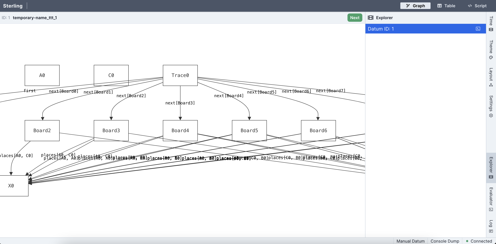
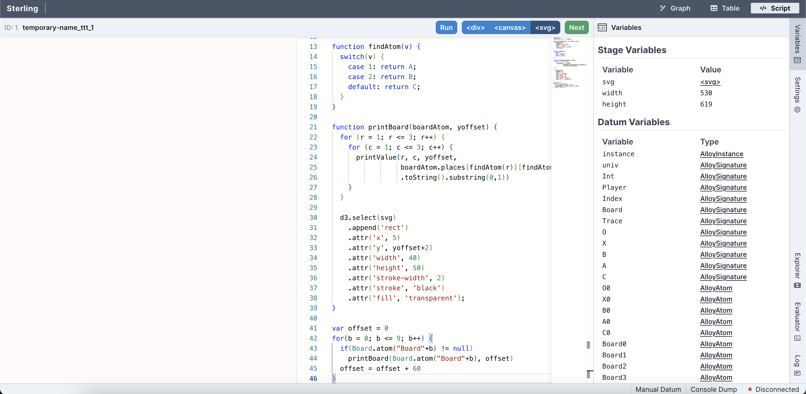
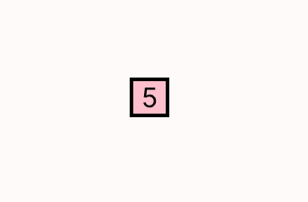
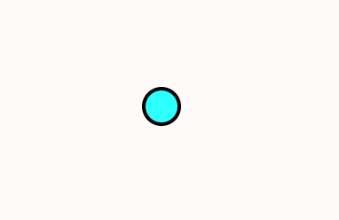
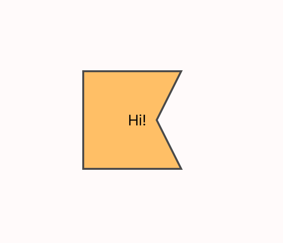

Home
Forge is a lightweight modeling language, similar to Alloy, that has been designed for teaching modeling and lightweight formal methods. It comprises three sublanguages or modes:
- Froglet (
#lang forge/froglet), a language for modeling using only functions and partial functions; - Relational Forge (
#lang forge), an extension of Froglet to include relations and relational operators; - Temporal Forge (
#lang forge/temporal), an extension of Forge to include linear-temporal operators (akin to Alloy 6 or Electrum).
Students can progress through this language hierarchy as new concepts are introduced in class; this lets the course avoid a steep language-learning curve and cover important practical material earlier than would otherwise be possible.
No! In principle, we might ideally have three separate versions, but we are focusing (for now) on producing better documentation overall rather than taking on the subtle cross-language page-linking challenge.
We will nevertheless try to maintain a reasonable separation.
Textbook
Forge also has a draft textbook, which is in a different document in order to make searching easier.
Using this Documentation
This page has three buttons for popping out the table of contents, changing the color theme, and searching. If you do not see them, please ensure that JavaScript is enabled.
The table of contents is expandable. Once it is open, cxlick the ❱ icons to expand individual sections and subsections to browse more easily!
To change the color theme of the page, click this button:
To search, click this button:
Installation
Dependencies
To run Forge, you will need to have installed:
- Racket (we suggest the latest version, and certainly no lower than 8.7);
- Java 11 or later (which you can get here if you don't have it);
- A modern web-browser for visualizing output (we suggest, and primarily test on, Firefox).
We strongly suggest using our VSCode extension to write Forge, although you can also run from the terminal or use DrRacket (Racket's built-in IDE). You can get VSCode here.
Installing Forge
To install Forge, you have two options. The first is to install from Racket’s package server, and the second is to install from Git, which also allows (but doesn't require) you to use the latest development build if you wish.
We recommend installing from Git, because this way you can pull updates immediately if you wish to.
Installing from Git
To install via Git, open a terminal window. Then:
- clone our Git repository (
git clone https://github.com/tnelson/forge); - change directory to the repository folder (
cd forge); - install the
forgeandfrogletpackages (raco pkg install ./forge).
If you wish to switch to the development branch, you must:
- check out the development branch (
git checkout dev); - rebuild Forge (
raco setup forge).
Note the ./ in the install command! If you write raco pkg install forge froglet, that will install both from the package server instead of your local directory. Adding prefix ./ tells raco that you're talking about folders instead. It's also important to have both ./forge and ./froglet in the single command; they depend on each other, so leaving one out will cause raco to "helpfully" install it from the package server, not your local drive.
If you have already installed a version of Forge prior to 2025, we are no longer using the separate package froglet. Rather than simply updating, you should run raco pkg uninstall forge froglet and follow the installation instructions from the beginning.
Installing from Racket's Package Servers
For the standard package-server installation, after installing Racket, run raco pkg install forge froglet from your command line. Alternatively, you can run Racket's IDE, DrRacket, and navigate to File > Install Package. Type forge as the package name and choose Install, then do the same for froglet
If the package is already installed, you'll see an Update button instead of an Install button.
Forge Version
When you run a Forge file (via racket <filename> at the command line), you'll be told the Forge version you're running. This is important information to include with questions, etc. If you're taking a class that uses Forge, you can expect a few Forge updates throughout the semester---please keep Forge updated!
Installing VSCode Extension for Forge
To get Forge's VSCode extension, open VSCode and click the Extensions button on the sidebar:
Then type forge-language-server in the search bar. You should see an extension with that title, under the developer name "Siddhartha Prasad". Install it and reload VSCode.
An early version of this extension was provided via Github, rather than the VSCode Marketplace. Please use the Marketplace version (and uninstall the other, if you have it) if for no other reason than it will automatically update when you restart VSCode.
Logging in VSCode
If you're working in a file with the .frg extension, you should see an eye icon in your VSCode toolbar (usually on the upper right). This can be used to opt out of (and back into) logging. By default, we log the state of your Forge model whenever you click the run button in VSCode. This includes the contents of every .frg file being edited in VSCode. No other information is recorded, not even your identity.
In prior years, logging was done via annotations to #lang in homework files. We no longer do this. A major consequence is that we no longer know your identity from logs; we believe this is an improvement! However, it does mean we can't reach out if we see a problem happening. Please report problems if you see them.
We log primarily for two reasons.
- First, Forge is under active development---the majority of the codebase was written by undergraduate researchers working with Tim! This means that information about how Forge is used, what errors arise, etc. can be useful in making Forge better.
- Second, Forge is mainly used in the classroom. It's easy for instructors to claim, anecdotally, that students "like" something or "find it useful" based on a handful of office-hours conversations. We want to hold ourselves to a higher standard. What proportion of students actually uses that feature? Is the hinting we provide on some problems effective? Questions like these are impossible to answer without knowing something about patterns of use.
Checking your installation
Once Racket, Forge, and Java are installed, you should confirm that everything is working properly. Create a text file test.frg with only the contents #lang forge and then, from your command line, type racket test.frg. If this runs without error, congratulations, Forge should now be installed!
If you encounter any issues installing, please report them. We'll do our best to get you help as soon as possible.
- If you're taking CSCI 1710 at Brown, a class that uses Forge, report bugs on EdStem.
- If you don't have a course-related means of reporting bugs, please mail Tim (Tim_Nelson@brown.edu).
Updating Forge
Please remember to update using the method appropriate for your install.
If you installed via Racket's package system
Do:
raco pkg update forgeandraco pkg update froglet.
or clickUpdatefor both in the DrRacket package manager.
If you installed via Git
Do:
cdto the location of theForgerepository on your system;- make sure you're in the branch you want (
mainfor published updates,devfor our development build); git pullin the repository, and thenraco setup forgeandraco setup froglet(to rebuild the packages).
Confirm that these packages are installed properly using raco pkg show froglet and raco pkg show forge.
If one is installed from a directory on your machine, and another via the Racket package system, issues can occur. Here's how to read the information that raco provides. If it says:
link <path on your machine>then the package is installed from a local folder; andcatalog ...means the package is installed via Racket's servers.
Known Installation-Related Issues
Windows: Visualizer Connectivity
If you use Windows, running Forge from cmd or PowerShell is not recommended (as of January 2024); we strongly suggest using the VSCode extension, DrRacket, the Windows Subsystem for Linux (wsl), Git bash, or Cygwin.
Overview
Forge is a tool (and a set of languages) that allows us to define models of systems and explore instances of those models. But what does that mean? Let's break it down:
Systems
A system can be generally thought of as a particular way that various entities interact. A system isn't necessarily a computer system, although it can be. For example:
- The game of baseball is a system involving players, a ball, a field and bases, etc. along with rules that govern how those things interact with each other.
- Family trees are a system where there are people, and rules that express how they are related to each other.
- A cryptographic protocol is a system where there are parties, messages, cryptographic primitives, and rules that govern how messages can be encrypted, decrypted, sent, and received.
- Binary search trees are a system where there are nodes, values, connections between nodes, and rules that govern how nodes can be created, removed, and positioned relative to one another. There is no limit to the type or complexity of a system that we can discuss, although different tools and techniques are useful for working with and able to express different kinds of systems.
Models
A model is a representation of a system that faithfully includes some but usually not all of the system's complexity. There are many different ways to model a system, all of which have different advantages and disadvantages. Think about what a car company does before it produces a new car design. Among other things, it creates multiple models. E.g.,
- it models the car in some computer-aided design tool; and then
- creates a physical model of the car, perhaps with clay, for testing in wind tunnels etc.
There may be many different models of a system, all of them focused on something different, and all of them useful for something. (As the statisticians say, "all models are wrong, but some models are useful".)
Models define a notion of what kinds of things exist in the system and (some of) the "rules" governing the system. In a well-crafted model, we can explore what scenarios are possible in the system, which gives us insight and the ability to reason about the system itself---within the bounds of what the model expresses.
Example: Friends
If we wanted to model a group of friends, we might define our model to have the following structure:
- There's a type of object,
Person, in the system. - Each
Personhas abestFriendfield, possibly containing aPerson. - Each
Personhas a best friend.
These three items correspond to three different concepts in Forge: defining types (sigs), defining fields that those types have, and defining constraints.
A Note on Imperfect Representations
It is very difficult to fully model some systems. That being said, we don't need to fully model a system for the model to be useful. We can simplify or omit concepts as needed to approximate the system while preserving the fundamentals that we're interested in.
We can see this principle applied in the car-manufacturing example above. You could use a solid clay model of a car to accurately determine the car's aerodynamics in a wind tunnel, but you'd have a hard time exploring how the doors of the car operate or how any of the interior parts work. What you can explore is limited by how the system is modeled. If all you care about is exploring the aerodynamic profile of a car, then we can safely abstract out the internals of the car and focus on the shape.
Likewise, in our "friend group" system example, we don't have to fully describe a Person in our model, we just have to describe the relevant properties of a Person. We abstract the idea of "friendship," combining all types of friends (best friend, acquaintance, etc.) into a single concept of "friend." We omit from our model the concept of a Person's dietary restrictions and myriad other things. These are all choices that affect the scope of our model. If we wanted to distinguish between types of friends, or examine familial relationships as well, we would have to expand the model to include those concepts---and we could!
Learning how to model a system is a key skill for engineers; abstraction is one of our main tools in Computer Science, and modeling lies at the heart of abstraction.
Instances
An instance is a concrete scenario that abides by the rules of a model, containing specific objects (atoms) and their relationships with each other.
We can draw a very rough analogy to object-oriented programming here. We might say:
- a
sigdefinition, along with its fields, is like a class; and - atoms within an instance of a model are like objects (since each atom belongs to some
sig). This is a useful analogy!
Just remember that it is an analogy and not the exact truth. There are important differences. For example, you might remember the heap from Java or some other language, and wonder how atoms (analogously to objects) are created or garbage-collected. But there is no heap in Forge instances, only a set of atoms for each sig. Similarly, you might wonder how a Forge model executes. But it doesn't! A Forge model defines a set of possible instances, which the tool searches for.
Each instance shows a single way that the constraints in the model can be satisfied. Here are two example instances, described in English:
- There are two people,
TimandNim.TimhasNimas a best friend, andNimhasTimas a best friend. - There is one person,
Nim, who hasNimas a best friend. - There are no people.
Why do the second and third instance get produced? Because all we told Forge to enforce was:
- Each
Personmust have a best friend.
If there are no people, there is nobody to be obligated to have friends. The empty instance satisfies this constraint.
Satisfiability and Unsatisfiability
Semi-formally, we'll say that a model is satisfied by an instance if:
- it contains sets of atoms for every
sigin the model; - each atom has fields appropriate to its
sig; and - the instance obeys all of the model's constraints.
A model is satisfiable if there exists some satisfying instance for it. A model is unsatisfiable if there is no instance that satisfies it.
If you play Sudoku, you might imagine modeling the game as a set of constraints. Then add:
- constraints that express the starting puzzle; and
- a constraint expressing the need to populate every square in the board.
If the starting puzzle has a solution, the model will be satisfiable. If there is no solution, it will be unsatisfiable.
Next Steps
In Forge, we use sigs to define the types that exist in a system, and constraints to define the "rules" of the system.
Addendum for Alloy Users
All Forge languages (as of January 2024) are restricted versions of Alloy 6, with some added features.
Relational Forge syntax and semantics are nearly identical to Alloy 5. Similarly, Temporal Forge approximates Alloy 6. There are some minor differences. E.g.:
- All Forge languages eschew the
factconstruct andsig-facts in favor of using predicates throughout. - Forge disallows some complex field declarations. E.g., one cannot write a bijection as
f: A one -> one A. Instead, Forge fields always have exactly one multiplicity keyword and a product of sig names. - Forge introduces new syntax for testing. It also supports partial instances via the
instkeyword. - Due to user-experience concerns, we have changed the name of the
aftertemporal operator tonext_state. This avoids confusion due to Alloy (and Forge's) implicit conjunction; theafterinA after Bappears at first to be a binary operator, which it is not!
Sigs
Sigs (short for "signatures") are the basic building block of any model in Forge. They represent the types of the system being modeled. To declare one, use the sig keyword.
sig <name> {}
A sig can also have one or more fields, which define relationships between members of that sig other atoms. The definition above has no fields because the braces are empty. In contrast, this sig definition would have many fields:
sig <name> {
<field>,
<field>,
...
<field>
}
Ensure that there is a comma after every field except for the last one. This is a common source of compilation errors when first defining a model!
Fields
Fields allow us to define relationships between a given sigs and other components of our model. Each field in a sig has:
- a name for the field;
- a multiplicity (
one,lone,pfunc,func, or, in Relational or Temporal Forge,set); - a type (a
->separated list ofsignames, including the built-in sigInt).
Here is a sig that defines the Person type from the overview.
sig Person {
bestFriend: lone Person
}
The lone multiplicity says that the field may contain at most one atom. (Note that this example has yet to express the constraint that everyone has a friend!)
More Examples
Let's look at a few more examples.
Basic Sig with Fields (Linked List):
A model of a circularly-linked list might have a sig called Node. Node might then have a field next: one Node to represent the contents of every Node's next reference. We use one here since every Node always has exactly one successor in a circularly linked list.
sig Node {
next: one Node
}
Basic Sig with Fields (Binary Tree):
A model of a binary tree might have a sig called Node. Node might then have three fields:
left: lone Nodeandright: lone Nodeto represent theNode's children. We uselonehere since the left/right child fields can either be empty or contain exactly oneNode.val: one Intto represent the value of each Node, where we have decided that everyNodeshould have anInteger value. We useonehere because eachNodeshould have exactly one value.
sig Node {
left: lone Node,
right: lone Node,
val: one Int
}
Int is a built-in sig provided by Forge. To learn more about how Forge handles integers, see Integers in Forge.
Example - Basic Sig without Fields:
Not every sig in a model needs to have fields to be a useful part of the model! sigs with no fields are often used in conjunction with other sigs that reference them. One such example might look like this:
sig Student {}
sig Group {
member: set Student
}
Note that the set multiplicity is only available in Relational and Temporal Forge, not Froglet.
You cannot use the same field name within two different sigs in a model. This is because field names are globally available for writing constraints.
Inheritance
Sigs may inherit from other sigs via the extends keyword:
sig <name> extends <parent sig name> {
<additional fields> ...
}
Sigs may only have at most one parent sig. Moreover, much like how no object can be belong to multiple top-level sigs, no object can belong to more than one immediate child of any sig. That is, any two sigs A and B will never contain an object in common unless one is a descendent of the other.
sig Cat {
favoriteFood: one Food
}
sig ActorCat extends Cat {
playName: one Play
}
sig ProgrammerCat extends Cat {}
This means that any ProgrammerCat object is also a Cat object, and so will have a favoriteFood field. But only ActorCats have the playName field. Moreover, any cat may be either an ActorCat, ProgrammerCat, or neither---but not both.
Forge must have bounds for every sig, including child sigs. The default of 0-to-4 objects is applied to every top-level sig. Forge can often infer consistent bounds for child sigs, but it cannot always do so and will require you to provide them. This is most often the case in the presence of complex hierarchies involving abstract and one sigs.
More importantly, example and inst syntax require the contents of parent sigs to be defined once the contents of a single child are set. To see why, consider this example:
example workingCats is {myPredicate} for {
ActorCat = `ActorCat0 + `ActorCat1
ProgrammerCat = `ProgrammerCat0 + `ProgrammerCat1
}
This produces an error:
run: Please specify an upper bound for ancestors of ActorCat.
This error occurs because Forge knows only that there are 2 specific actors and 2 specific programmers, and can't infer whether any other cats exist. To fix the error, provide bounds for the parent sig:
example workingCats is {myPredicate} for {
ActorCat = `ActorCat0 + `ActorCat1
ProgrammerCat = `ProgrammerCat0 + `ProgrammerCat1
Cat = `ActorCat0 + `ActorCat1 + `ProgrammerCat0 + `ProgrammerCat1
}
Singleton and Maybe Sigs
A sig declaration can be annotated to indicate:
- that there is always exactly one object of that sig (
one sig); - that there is never more than one object of that sig (
lone sig); or - that any object of that sig must also be a member of some child sig (
abstract sig).
sig Dog {}
-- "Beauty without Vanity, Courage without Ferosity, Strength without Insolence"
one sig Boatswain extends Dog {}
If you'd asked Lord Byron, there was only one Boatswain---whose tomb was famously larger than Lord Byron's own.
abstract sig Student {}
sig Undergrad, Grad extends Student {}
In this example, any Student must be either an Undergrad or Grad student.
Lone sigs aren't used much; you can think of them in the same way you'd use a one sig, but with the possibility that the sig will be empty. This can sometimes be useful for efficiency. E.g., if we were modeling soup recipes:
abstract sig Ingredient {}
lone sig Potatoes extends Ingredient {}
lone sig Carrots extends Ingredient {}
lone sig Celery extends Ingredient {}
lone sig Water extends Ingredient {}
// ...
There might be dozens of possible ingredients. But if we only want to use a few at a time, it can be useful to set a lower bound on Ingredient and allow un-used ingredients to simply not exist.
Field Multiplicity
While types define what kinds of data can fit into a specific field, multiplicities define how that data can be arranged. For example, multiplicities will say whether or not a field can be empty.
Singleton fields
If you're declaring a field that is meant to hold a single value, and not something like a function, there are two possible multiplicities: one (which means that a value must always be present) and lone (which means that a value may be present).
one: a singleton value (this field always contains a single object); andlone: either a singleton value or no value (this field contains 0 or 1 object).
This definition of a Student sig enforces that every student has an advisor, but not every student has a concentration.
sig Student {
advisor: one Faculty,
concentration: lone Concentration
}
If we later write constraints about students, it is possible for a student's concentration to evaluate to none.
Set fields (Relational and Temporal Forge only)
If you're declaring a field that holds a set of atoms, use the set multiplicity.
Let's add a field for the friends a student has at Brown:
sig Student {
advisor: one Faculty,
concentration: lone Concentration,
friends: set Student -- in reality, perhaps not only students!
}
A student's friends may evaluate to none, just as in the lone multiplicity. But it might also evaluate to set of more than one student.
Froglet does not support the set multiplicity, because sets add a layer of complexity to the language. If you really need to model sets in Froglet, you an approximate them using boolean-valued functions (see below).
Function Fields
If you want a field that is a function or partial function, use the func or pfunc multiplicities. (If you view singleton fields as functions that take no arguments, func and pfunc are analogous to one and lone.) These multiplicities only work if the field's type involves more than one sig. Suppose we are defining a function field meant to map elements of to elements of . Then:
func A -> B -> ... -> Y -> Z: denotes a total function with the above domain and co-domain. Because it is a total function, every possible input must have exactly one output value.pfunc A -> B -> ... -> Y -> Z: denotes a partial function with the above domain and co-domain. Because the function may be partial, every possible input has either one output value or is not mapped by the function.
Let's add a function that says what grade a student got in a given class. Because students don't take every course available, we might use a partial function for this:
sig Student {
advisor: one Faculty,
concentration: lone Concentration,
grades: pfunc Course -> Grade
}
If we later write constraints about students, it is possible for a student's grade in a particilar class to evaluate to none.
Fields declared as pfunc are analogous to maps or dictionaries in an object-oriented programming language: some keys may not map to values, but if a key is mapped it is mapped to exactly one value.
Keep in mind that, unlike in (say) Java, the functions themselves are not objects on a heap, but rather just tables of values being mapped to other values.
Relation Fields (Relational and Temporal Forge only)
If you want a field to represent an arbitrary relation that may or may not be a function, use the set multiplicity instead of pfunc or func.
Perhaps we want to keep track of the set of project partners a student had during a particular course:
sig Student {
advisor: one Faculty,
concentration: lone Concentration,
partnersIn: set Course -> Student
}
Now, for a given student, partnersIn might map to more than one student for a given class. Neither func nor pfunc would allow this.
Froglet does not support the set multiplicity, because sets add a layer of complexity to the language. If you really need to model sets in Froglet, you an approximate them using boolean-valued functions (see below).
If you really need something like sets, but are working in Froglet, you can use the following trick.
abstract sig Boolean {}
one sig True, False extends Boolean {}
sig Student {
advisor: one Faculty,
concentration: lone Concentration,
partnersIn: func (Course -> Student) -> Boolean
}
Alternatively, you can represent booleans slightly more efficiently as the presence (or non-presence) of a mapping in a partial function:
one sig Yes {}
sig Student {
advisor: one Faculty,
concentration: lone Concentration,
partnersIn: pfunc (Course -> Student) -> Yes
}
Advanced Material (How do sigs and fields work?)
In case you're curious, we include a very brief sketch of how sigs, fields, etc. relate to Forge's core solver engine. This information might be useful when debugging a tough problem or just for understanding the tool better.
If you are currently working in Froglet, you may see terms in this document that you aren't yet familiar with.
Forge's solver engine works entirely in terms of sets, regardless of which Forge language you are using. Each sig name corresponds to the set of atoms of that type in a given instance. Similarly, each field name f corresponds to a relation (set) with arity . (The extra column in the relation holds the atom the field value belongs to.)
The arity of a set is how many elements its member tuples contain. E.g., a set of atoms would have arity 1, but a set of pairs of atoms would have arity 2.
E.g.,
sig B {}
sig A {
myField: set A -> B
}
is internally represented as a pair of sets A and B and a 3-ary relation named myField that must be a subset of A -> A -> B in any instance.
The role of bounds
Because every run is always equipped with a finite bound on every sig, the solver is then able to convert Forge constraints to a purely boolean logic problem, where every possible membership in each set is assigned a unique boolean variable.
#lang forge
sig Person {
bestFriend: one Person
}
run {
all p: Person | {
some disj p1, p2: Person | {
p1.bestFriend = p
p2.bestFriend = p
}
}
} for exactly 4 Person
This model defines two sets:
Person, of arity 1; andbestFriend, of arity 2.
Since there are exactly 4 people allowed by the run, the contents of Person is fixed. But bestFriend may contain any pair of Person objects. There are possible pairs, and so there are 16 boolean variables needed to define the bestFriend field.
You can see these reflected in the primary variable portion of the statistical output Forge gives when running this file:
#vars: (size-variables 178); #primary: (size-primary 16); #clauses: (size-clauses 311)
Constraints
Once the model has defined the kinds of objects it deals with, it defines constraints that limit how those objects can behave.
Rules vs. Instructions
This idea of a constraint is key in Forge (and in many other modeling languages), and it's very different from programming in a language like Java, Pyret, or Python.
When you're programming traditionally, you give the computer a set of instructions and it follows those instructions. This is true whether you're programming functionally or imperatively, with or without objects, etc. In contrast, modeling languages like Forge work differently. The goal of a Forge model isn't to run instructions, but rather to express the rules that govern systems.
Here's a useful comparison to help reinforce the difference (with thanks to Daniel Jackson):
- Given a lack of instructions, a program does nothing.
- Given a lack of constraints, a model allows everything.
Example: Concentration Requirements
Let's get concrete. The concentration requirements for an A.B. in CSCI state that to get an A.B., a student must (among other things) complete a pathway, which comprises two upper-level courses. We might rewrite this as:
"Every student who gets an A.B. must have passed two 1000-level courses in the same pathway."
If we're modeling concentration requirements, we might decide to create sigs for Student, Course, Pathway, and so on, with fields you'd expect. For example, we might create:
sig Student {
-- dictionary of grades for courses taken and passed
grades: pfunc Course -> Grade
}
But this only describes the shape of the data, not the concentration requirements themselves! To do that, we need to create some constraints. The sentence above states a requirement for every student. Generally the department follows this rule. But it's possible to imagine some semester where the department makes a mistake, and gives an A.B. degrees to someone who hadn't actually finished a pathway. The sentence is something that could be true or false in any given semester:
"Every student who gets an A.B. must have passed two 1000-level courses in the same pathway."
In Forge, we'd write this for-all using a quantifier:
all s: Student | ...
Then we have a condition that triggers a requirement: if a student has gotten an A.B., then something is required. In Forge, this becomes an implication inside the quantifier:
all s: Student | s.degreeGranted = AB implies {...}
Let's look more closely at the part we wrote: s.degreeGranted = AB. For a given student, that is also either true or false. But something important is different inside the =: s.degreeGranted doesn't denote a boolean, but rather an atom in some instance (which will perhaps be equal to AB). These are very different kinds of syntax. A similar thing is true for s, course1, and course2. Let's finish writing the constraint and then color-code the different parts:
all s: Student | s.degreeGranted = AB implies {
some disj course1, course2: Course | course1.pathway = course2.pathway
}
The green syntax is about whether something is true or false. The red syntax is about identifying specific atoms in an instance. By using both kinds of syntax, you can express constraints about the shape of instances.
- without boolean-valued syntax, you couldn't express implications, "or", "and", etc.
- without atom-valued syntax, you could only talk about abstract boolean values, not actual atoms in the world.
Writing Constraints: Formulas vs. Expressions
The top-level constraints that Forge works with must always evaluate to booleans, but the inner workings of constraints can speak about specific objects, the values of their fields, and so on. We'll make the distinction between these two different kinds of syntax:
- Formulas always evaluate to booleans---i.e., either true or false; and
- Expressions always evaluate to objects or sets of objects.
Unlike what would happen in a programming language like JavaScript or Python, attempting to use an expression in place of a formula, or vice versa, will produce an error in Forge when you try to run your model. For example, if we wrote the constraint all s: Student | s.grades, what would that mean? That every s exists? That every s has passed some class? Something different? To avoid this ambiguity, Forge doesn't try to infer your meaning, and just gives an error.
Always ask, for every word you write: are you writing about what must be true, or naming some atom or set of atoms?
Context for Evaluating Constraints: Instances
Notice that there's always a context that helps us decide whether a constraint yields true or false. In the above example, the context is a collection of students, courses taken and degrees granted. For some other model, it might be a tic-tac-toe board, a run of a distributed system, a game of baseball, etc. We'll call these instances. An instance contains:
- a set of atoms for each
sigdefinition (the objects of that type in the world); and - a concrete function (or partial function) for each field of the appropriate type. Together, these give the context that makes it possible to tell whether constraints have been satisfied or not.
Once you move from Froglet to Relational Forge, the value of a field might be an arbitrary relation, and not a function.
Next Steps
The next sections describe formula and expression syntax in more detail. A reader familiar with this syntax is free to skip to the section on instances, or progress to running models in Forge.
For more information on temporal operators, which are only supported in Relational Forge, see the page on Temporal Mode. We maintain these in separate chapter because the meaning of constraints in this mode can differ subtly.
Instances
Intuition
Forge instances give the context in which constraints are evaluated. E.g., an instance might describe:
- Tim's family tree, going back 3 generations;
- CSCI courses offered at Brown this semester, with information on who teaches each;
- the current state of a chessboard;
- an entire game of tic-tac-toe;
- etc. What an instance contains depends on the current model. Family-tree instances would make sense if the model had defined people, a parenthood relationship, etc.---but not if it was about the game of chess!
An instance gives concrete values for sigs and their fields. It says which atoms actually exist in the world, and what their fields contain. This is what gives constraints their meaning. We could write a model of tic-tac-toe in Forge, but statements like "some player has won the game" is neither true nor false by itself---it depends on the instance.
The remainder of this page defines instances more formally.
If you are working in Froglet, the remainder of this page may reference terms you are as yet unfamiliar with. Don't worry; this will be covered more in class. Informally, you might read "relation" as "function".
</div>
</div>
## Formal Definition of Instances
Because `sig` definitions can involve concepts like inheritance, partial functions, and uniqueness, the precise definition is a bit involved.
Consider an arbitrary Forge model $M$ that defines some `sig`s and fields.
An _instance_ is a collection of finite sets for each `sig` and field in the model. For each `sig S` in the model, an instance contains a set $S$ where:
- if `S` has a parent `sig P`, then the contents of $S$ must be a subset of the contents of $P$;
- for any pair of child-sigs of `S`, `C1` and `C2`, $C_1$ and $C_2$ have no elements in common;
- if `S` is declared `abstract` and has child sigs, then any object in $S$ must also be present in $C$ for some `sig C` that extends `sig S`; and
- if `S` is declared `one` or `lone`, then $S$ contains exactly one or at most one object, respectively.
For each field `f` of type `S1 -> ... -> Sn` of `sig S` in the model, an instance contains a set $f$ where:
- $f$ is subset of the cross product $S\times S_1 \times ... \times S_N$;
- if `f` is declared `one` or `lone`, then $f$ can only contain exactly one or at most one object, respectively;
- if `f` is declared `func`, then there is exactly one entry in $f$ for each $(s, s_1, ..., s_{n-1})$ in $S\times S_1 \times ... \times S_{(n-1)}$.
- if `f` is declared `pfunc`, then there is at most one entry in $f$ for each $(s, s_1, ..., s_{n-1})$ in $S\times S_1 \times ... \times S_{(n-1)}$.
The union over all `sig`-sets $S$ in an instance (including the built-in sig `Int`) is said to be the _universe_ of that instance.
<div id="admonition-fields-are-not-objects" class="admonition admonish-tip">
<div class="admonition-title">
Fields are not objects
<a class="admonition-anchor-link" href="#admonition-fields-are-not-objects"></a>
</div>
<div>
It is sometimes useful to use terminology from object-oriented programming to think about Forge models. For example, we can think of a `pfunc` field like a dictionary in Python or a map in Java. However, _a field is not an object_. This matters for at least two reasons:
- We can't write a constraint like "every `pfunc` field in the model is non-empty", because there's no set of `pfunc` "objects" to examine.
- Two different objects in an instance will be considered non-equal in Forge, even if they belong to the same `sig` and have identical field contents. In contrast, two fields themselves are equal in Forge if they have identical contents; fields are relations that involve atoms, not objects themselves.
</div>
</div>
<div id="admonition-tuples-arity" class="admonition admonish-info">
<div class="admonition-title">
Tuples, Arity
<a class="admonition-anchor-link" href="#admonition-tuples-arity"></a>
</div>
<div>
An ordered list of elements is called a _tuple_, and we'll sometimes use that term to refer to elements of the `sig` and field sets in an instance. The number of elements in a tuple is called its _arity_. Since any single `sig` or field set will contain tuples with the same arity, we can safely talk about the arity of these sets as well. E.g., in the above definition, a field `f` of type `S1 -> ... -> Sn` in `sig S` would always correspond to a set with arity $n+1$.
</div>
</div>
Formulas
Formulas are a type of Forge syntax. Given an instance, every formula evaluates to a boolean value. If the formula is true of an instance, we say that the instance satisfies the formula.
Formula-Combining Operators
Formula operators combine smaller formulas to produce new formulas. Many closely resemble similar operators from programming languages, like &&, ||, and !.
List of Available Operators:
For the following <fmla> means an arbitrary formula.
- Negation:
not (!) - Conjunction:
and (&&) - Disjunction:
or (||) - Implication:
implies (=>)- If-then-else:
else
- If-then-else:
- If-and-only-if:
iff (<=>)
Some operators have alternative syntax (marked by alt) which are equivalent. Use whichever is most natural and convenient to you.
not (alt: !)
not <fmla>
! <fmla>
true when <fmla> evaluates to false
If some p.spouse is true when the person p is married, not (some p.spouse) denotes the opposite, being true whenever p is not married.
and (alt: &&)
<fmla-a> and <fmla-b>
<fmla-a> && <fmla-b>
true when both <fmla-a> and <fmla-b> evaluate to true.
If some p.spouse is true when the person p is married, and p.spouse != p is true when p is not married to themselves, then some p.spouse and p.spouse != p is true exactly when p is married, but not to themselves.
Forge treats consecutive formulas within { ... } as implicitly combined using and. For instance, the above example could also be written as:
{
some p.spouse
p.spouse != p
}
or (alt: ||)
<fmla-a> or <fmla-b>
<fmla-a> || <fmla-b>
true when either <fmla-a> is true or <fmla-b> evaluates to true.
If some p.spouse is true when the person p is married, and p.spouse != p is true when p is not married to themselves, then some p.spouse or p.spouse != p is true exactly when p is either:
- married; or
- not married to themselves (including the case where
pis unmarried).
implies (alt =>)
<fmla-a> implies <fmla-b>
<fmla-a> => <fmla-b>
true when either <fmla-a> evaluates to false or <fmla-b> evaluates to true.
If some p.spouse is true when the person p is married, and p.spouse != p is true when p is not married to themselves, then some p.spouse implies p.spouse != p is true exactly when p is either:
- unmarried; or
- not married to themselves.
implies else (alt: => else)
{<fmla-a> implies <fmla-b> else <fmla-c>}
{<fmla-a> => <fmla-b> else <fmla-c>}
takes the value of <fmla-b> when <fmla-a> evaluates to true, and takes the value of <fmla-c> otherwise.
If:
some p.spouseis true when the personpis married,p.spouse != pis true whenpis not married to themselves, andsome p.parent1is true whenphas aparent1in the instance,
then some p.spouse => p.spouse != p else some p.parent1 is true exactly when:
pis married, and not to themselves; orpis not married and have aparent1in the instance.
iff (alt: <=>)
<fmla-a> iff <fmla-b>
<fmla-a> <=> <fmla-b>
true when <fmla-a> evaluates to true exactly when <fmla-b> evaluates to true.
If some p.spouse is true when the person p is married, and some p.parent1 is true when p has a parent1 in the instance, then some p.spouse iff some p.parent1 is true exactly when either:
pis married and has aparent1in the instance; orpis unmarried has noparent1in the instance.
Cardinality and Membership
The following operators produce formulas from smaller expression arguments:
no <expr>: true when<expr>is emptylone <expr>: true when<expr>contains zero or one elementsone <expr>: true when<expr>contains exactly one elementsome <expr>: true when<expr>contains at least one element<expr-a> in <expr-b>: true when<expr-a>is a subset of or equal to<expr-b><expr-a> = <expr-b>: true when<expr-a>and<expr-b>contain exactly the same elements
Quantifiers
In the following, <x> is a variable, <expr> is an expression of arity 1, and <fmla> is a formula (that can use the variable <x>). You can quantify over a unary set in the following ways:
some <x>: <expr> | { <fmla> }: true when<fmla>is true for at least one element in<expr>; andall <x>: <expr> | { <fmla> }: true when<fmla>is true for all elements in<expr>
If you want to quantify over several variables, you can also do the following:
some <x>: <expr-a>, <y>: <expr-b> | { <fmla> }; orsome <x>, <y>: <expr> | { <fmla> }.
The syntax is the same for other quantifiers, such as all.
Complex Quantifiers
Forge also provides 3 additional quantifiers, which encode somewhat richer constraints than the above:
no <x>: <expr> | { <fmla> }: true when<fmla>is false for all elements in<expr>lone <x>: <expr> | { <fmla> }: true when<fmla>is true for zero or one elements in<expr>one <x>: <expr> | { <fmla> }: true when<fmla>is true for exactly one element in<expr>
The above 3 quantifiers (no, lone, and one) should be used carefully. Because they invisibly encode extra constraints, they do not commute the same way some and all quantifiers do. E.g., some x : A | some y : A | myPred[x,y] is always equivalent to some y : A | some x : A | myPred[x,y], but one x : A | one y : A | myPred[x,y] is NOT always equivalent to one y : A | one x : A | myPred[x,y]. (Why not? Try it out in Forge!)
Beware combining the no, one, and lone quantifiers with multiple variables at once; the meaning of, e.g., one x, y: A | ... is "there exists a unique pair <x, y> such that ...". This is different from the meaning of one x: A | one y: A | ..., which is "there is a unique x such that there is a unique y such that ...".
Quantifying Over Disjoint Objects
Sometimes, it might be useful to try to quantify over all pairs of elements in A, where the two in the pair are distinct atoms. You can do that using the disj keyword, e.g.:
some disj x, y : A | ...(adds an implicitx != y and ...); andall disj x, y : A | ...(adds an implicitx != y implies ...)`
Predicates
If you have a set of constraints that you use often, or that you'd like to give a name to, you can define a predicate using the pred keyword. A predicate has the following form:
pred <pred-name> {
<fmla-1>
<fmla-2>
...
<fmla-n>
}
Newlines between formulas in a pred will be combined implicitly with ands, helping keep your predicates uncluttered. Predicates can also be defined with arguments, which will be evaluated via substitution. For instance, in a family-tree model, you could create:
pred parentOrChildOf[p1, p2: Person] {
p2 = p1.parent1 or
p2 = p1.parent2 or
p1 = p2.parent1 or
p1 = p2.parent1
}
and then write something like some p : Person | parentOrChildOf[Tim, p]. Predicates may be used like this anywhere a formula can appear.
Expressions
Given an instance, expressions in Forge evaluate to sets of atoms.
Froglet
In Froglet, expressions must always denote a single atom or the empty set (none). This matches the abstraction where fields are always either total (one, func) or partial (lone, pfunc) functions.
Relational Operators
Relational Operators produce expressions (not formulas) from other expressions.
Recall that Forge treats every field of a sig as a relation of arity 1 higher than the arity of the field itself, with the object the field belongs to as the added left-most column. E.g., in this sig definition:
sig City {
roads: set City
}
the relation roads is an arity-2 set which contains ordered pairs of City objects.
This is what allows the dot operator in Forge to act as if it is field access when it is actually a relational join.
List of Relational Expression Operators:
+ (union)- (set difference)& (intersection). [] (relational join)-> (cross product)~ (transpose)^ (transitive closure)* (reflexive transitive closure)=> elseset comprehension
+ (union)
<expr-a> + <expr-b>
returns the union of the two exprs, i.e., the set containing all elements that are in either of the two exprs.
The set of employees who work at Brown CS include both faculty and staff:
BrownCS.employees = BrownCS.faculty + BrownCS.staff
- (set difference)
<expr-a> - <expr-b>
returns the set difference of the two exprs, i.e., everything in expr-a that is not also in expr-b.
The set of students eligible to UTA includes all students except those who are already hired as head TAs:
BrownCS.utaCandidates = Student - BrownCS.htaHires
& (intersection)
<expr-a> & <expr-b>
returns the intersection of the two exprs, i.e., all elements in both expr-a and expr-b.
Students in the "AI/ML" pathway must take multiple intermediate courses. In this (oversimplified) example, students can use the AI/ML pathway if they've taken both linear algebra and probability:
BrownCS.canUseAIML = BrownCS.tookLinearAlgebra & BrownCS.tookProbability
-> (cross product)
<expr-a> -> <expr-b>
returns the cross product of the two exprs.
If roads is a binary relation between City and itself, and Providence and Pawtucket are cities:
sig City {
roads: set City
}
one sig Providence, Pawtucket extends City {}
then Providence -> Pawtucket is an arity-2, one-element set, which can be used with other operators. E.g., roads + (Providence -> Pawtucket) represents the set of roads augmented with a new road (if it wasn't already there).
Likewise, City -> City will produce an arity-2 set containing every possible pair-wise combination of cities.
~ (transpose)
~<expr>
returns the transpose of <expr>, assuming it is has arity 2. (Attempting to use transpose on a different-arity relation will produce an error.)
If roads is a binary relation between City and itself:
sig City {
roads: set City
}
then ~roads is an arity-2, set that contains exactly the same elements in roads except reversed. E.g., if Providence -> Pawtucket was in roads, then Pawtucket -> Providence would be in ~roads.
Set Comprehension
A set-comprehension expression {x1: T1, ..., xn: Tn | <fmla>} evaluates to a set of arity-n tuples. A tuple of objects o1, ... on is in the set if and only if <fmla> is satisfied when x1 takes the value o1, etc.
In a model with sigs for Student, Faculty, and Course, the expression
{s: Student, i: Faculty | some c: Course | { some s.grades[c] and c.instructor = i} }
would evaluate to the set of student-faculty pairs where the student has taken a course from that faculty member.
. and [] (relational join)
<expr-a> . <expr-b>
returns the relational join of the two exprs. It combines two relations by seeking out rows with common values in their rightmost and leftmost columns. Concretely, if A is an -ary relation, and B is -ary, then A.B equals the -ary relation:
If roads is a binary relation between City and itself, and Providence is a city:
sig City {
roads: set City
}
one sig Providence extends City {}
then roads.roads is an arity-2 set and Providence.roads is an arity-1 set.
In the instance:
inst joinExample {
City = `Providence + `City0 + `City2
roads = `Providence -> `City0 +
`City0 -> `City1 +
`City1 -> Providence
}
roads.roads would contain:
`Providence -> `City1 (because `Providence -> `City0 and `City0 -> `City1)
`City0 -> `Providence (because `City0 -> `City1 and `City1 -> `Providence)
`City1 -> `City0 (because `City1 -> `Providence and `Providence -> `City0)
Providence.roads would contain:
`City0 (because `Providence -> `City0)
Relations in Forge don't have column names like they do in most databases. The join is always on the innermost columns of the two relations being joined.
Alternative syntax: <expr-a>[<expr-b>]: is equivalent to <expr-b> . <expr-a>;
^ (transitive closure)
^<expr>
returns the transitive closure of <expr>, assuming it is has arity 2. Attempting to apply ^ to a relation of different arity will produce an error. The transitive closure of a binary relation $r$ is defined as the smallest relation $t$ such that:
r in t; and- for all
a,b, andc, ifa->bis intandb->cis int, thena->cis int.
Informally, it is useful to think of ^r as encoding reachability using r. It is equivalent to the (unbounded and thus inexpressible in Forge) union: r + r.r + r.r.r + r.r.r.r + ....
If roads is a binary relation between City and itself, and Providence is a city:
sig City {
roads: set City
}
one sig Providence extends City {}
then ^roads is the reachability relation between cities.
* (reflexive transitive closure)
*<expr>
returns the reflexive-transitive closure of <expr>, assuming it is has arity 2. Attempting to apply * to a relation of different arity will produce an error.
For a given 2-ary relation r, *r is equivalent to ^r + iden.
if then else
{<fmla> => <expr-a> else <expr-b>}
returns <expr-a> if <fmla> evaluates to true, and <expr-b> otherwise.
Caveats: Alloy support
Forge does not currently support the relational Alloy operators <:, :>, or ++; if your models require them, please contact the Forge team.
Functions
In the same way that predicates define reusable formulas, functions define reusable expressions in Relational and Temporal Forge. Define functions with the fun keyword:
fun <fun-name>[<args>]: <result-type> {
<expr>
}
As with predicates, arguments will be evaluated via substitution. Functions may be used (with appropriate arguments) anywhere expressions can appear.
all p: Person | some inLawA[p]
This expands to:
all p: Person | some (p.spouse.parent1)
Let-Expressions
You can bind an expression to an identifier locally by using a let form:
let <id> = <expression> |
<formula>
This is useful to avoid code bloat due to re-use. E.g., if s is a state:
let s2 = Traces.nextState[s] |
canTransition[s, s2]
Using let in the evaluator
A let expression can be useful when debugging a model using Sterling's evaluator. E.g., if you want to evaluate an internal subformula for a specific value of a quantifier:
some p: Person | some p.spouse
you can check individual values by directly substituting (e.g., some Person0.spouse) but this is tiresome if the variable is used in multiple places. Instead, consider using let:
let p = Person0 | some p.spouse
This trick (referring to concrete objects) is only usable in the evaluator, because at that point a specific instance has been identified.
Comments
Forge models support 3 different syntactic styles of comment:
- lines beginning with
--are ignored; - lines beginning with
//are ignored; and - all text between
/*and*/are ignored.
/* ... */ comments may not be nested. E.g.,
/*
/*
*/
*/
would be a syntax error, because the first instance of */ terminates all preceding instances of `/*.
Running
How to Run
You can either use the Forge VSCode extension's play button, or invoke Forge directly from the terminal via Racket:
racket <modelname.frg>
You can provide Forge options directly by adding command-line flags:
- The
-oor-optionflag will set the option, but if the file sets that option the file's version will be used. - The
-Oor-overrideflag will set the option, and that option will hold regardless of what may be set in the file.
If ring_of_lights.frg is in the current directory, running:
racket ring_of_lights.frg -o run_sterling off -O verbose 0
will:
- disable Sterling unless the option is set in the file; and
- disable verbose output entirely, regardless of any
verboseoption settings in the file.
Commands to View Instances
There are two primary ways of running your model with the goal of getting instances. You can either as Forge to show you instances that satisfy a predicate you wrote with the run command, or ask Forge to look for counterexamples to a predicate you wrote with the check command.
The various testing commands will also execute your model.
Run
The run command can be used in a few different ways, show below:
<run-name>: run <pred> for <bounds>
<run-name>: run { <expr> } for <bounds>
Note that the run-name is optional to provide, but is helpful to distinguish what different run commands are showing.
When using the run command, Forge will display possible worlds (instances) where the predicates or expressions you specified evaluate to true, within the given bounds. Instances are displayed in Sterling If no such instances are found, "UNSAT" is displayed.
When no more satisfying instances can be found, Sterling displays "No more instances found".
Check
The check command is used to ask Forge to look for counterexamples to a given set of predicates, i.e. instances where the predicate or expression evaluates to false. The syntax is the same as for the run command, just with the keyword check instead:
<check-name>: check <pred> for <bounds>
<check-name>: check { <expr> } for <bounds>
If no counterexamples are found, Sterling displays "No counterexamples found. Assertion may be valid". When no more counterexamples can be found, Sterling displays "No more instances found".
Unless a predicate is explicitly used in the run, check, etc. command (or invoked by another predicate that is used in the command) it will not take effect. For example, if you have defined a wellformed predicate, but execute run {}, that predicate will not necessarily hold in instances Forge finds.
Visualizing and Evaluating Output
Forge uses a modified version of the Sterling model visualizer.
Visualizing Output
When you execute your model, Forge will either look for instances that satisfy the predicates you wrote, or look for counterexamples to the assertion you wrote. If you used a run command, or if Forge found a counter-example to a test, example, or assert you wrote, Forge launches a window in your browser that displays the output. (See the run and check sections for the different displays Sterling has in various scenarios.)
The basic visualization of the model is a directed graph showing all the atoms in that instance and the relations between them. You can also view an alternate depiction of the instance in the table view tab. To keep visualizations neat, Sterling will not show you any Int atoms that are not used in the instance.
Theming
The directed-graph view can be customized by clicking the Theme tray to the right of the Sterling window. Sterling supports two kinds of theming, listed below.
You can save your theme in a file and re-load it later in a new session. To do this, click the "Save As..." or "Choose File" options at the very top of the theming tray. The file will be downloaded as theme.json.
If you get a fresh instance and lose your theming, reloading a saved theme is a fast fix.
Projections
Projecting over a sig hides atoms of that sig in the visualizer and shows the rest of the instance as if that were the only atom of the projected sig. This can be a very useful for simplifying (e.g.) finite-trace instances, since much of the clutter will be eliminated. When a projection is active, the theming window will give the option to change which atom is being used.
Styles
Style attributes such as font and line thickness for each sig and field can be customized. For fields only, clicking the "display as attribute" checkbox will tell Sterling to stop visualizing the field as an edge in the graph, and display it as an annotation on nodes.
Clicking a sig or field name will expand the style selection box for that sig or field. Click the name again to collapse the box.
The default graph layout can sometimes be frustrating. For example, if you are modeling a weighted directed graph, you may have something like sig Node { edges: set Node -> Int }. By default, Sterling will display each tuple in edges as an edge from the first tuple element to the last tuple element, meaning that you'll see a lot of arcs from nodes to numbers.
To fix this, set the "Source Index" and "Target Index" fields in the styling for a given field. In the above case, you would want a source index of 0 and a target index of 1; Sterling would then move the weight to an edge label, resulting in a much more readable graph.
Visualizing in Temporal Forge
In temporal mode, when the trace found is of length greater than 1, Sterling will enable a few new features:
- You can advance back and forth through the trace by using the arrow buttons in the
Timedrawer. Next to these buttons, Sterling will say which state the lasso loops back to. For instance, "Loop: 1" would mean that the lasso loops back to the second state (states are 0-indexed). - Rather than one "Next" button, you'll see two: one labeled "Next" and the other "Next Config".
- The "Next Config" button will ask the solver for a new trace that varies the non-variable relations of your model. If all your relations are variable, or if other constraints prevent a different non-variable subset of the instance from satisfying your run, this button will lead to a no-more-instances screen.
- The "Next" button will ask the solver for a new trace that holds the non-variable relations constant. If there are no other traces possible without changing the non-variable relations, this button will lead to a no-more-instances screen.

The Evaluator
The evaluator provides a prompt that lets you query instances with Forge expressions. You can open the evaluator by clicking the "Evaluator" drawer on the far right of the Sterling window. Type a Forge expression and the evaluator will return its value in the current instance (assuming that Forge is still running). E.g.:

Because the evaluator works with respect to a single instance, exact values of expressions are returned. These expressions are (as of January 2024) not always Forge syntax. E.g., relations are displayed using nested parentheses, and false is written as #f. Fields are displayed in row form, with every entry in the field grouped into a parenthesis; in the example above, the meaning is that there's only one move on the board: X moved at row A, column C.
Individual atoms can be directly referenced by name in the evaluator, like in inst blocks (remember to prefix atom names with a backquote!) E.g., in the above example, `Board1 was an atom name.
The Evaluator in Temporal Forge
If running in temporal mode, the evaluator is run in the context of the first state of the trace shown. To ask about later traces, use the ' or next_state operators. Remember that next_state applies to formulas, and ' applies to relational expressions. So in a directed graph you could ask whether there are edges in the second state via some edges' or after some edges.
Custom Visualizations: Script View
Sterling also allows you to write and run scripts that produce your own custom visualizations. This documentation site contains a basic example here:
If you want to try out this example, do the following:
Step 1: Open the Forge model and run it (racket ttt.frg). Sterling should open in your web browser, defaulting to the directed-graph visualization---which isn't very useful for this model. You should see something like this:

Step 2: Click the Script button on the upper-right of the window. This will switch to custom script view mode. Paste the script into the editor, then click the Run button. You should see something like this before clicking Run:

If you don't like the "Variables" tab taking up space, just click the corresponding drawer on the far right. The tab should collapse, making more room for the editor and visualization area.
After running, you should see something like this, with a sequence of board states displayed on the left-hand side of the screen:
")
More Information
For more complex examples, library documentation, instructions on writing your own visualizers, etc. see Custom Visualizations.
Bounds
Forge is a bounded model finder, meaning it can only look for instances up to a certain bound. You can specify bounds in two seperate ways in Forge: using numeric bounds or instance bounds.
Numeric bounds (also called "scopes")
The most basic way of specifying bounds in Forge is providing a maximum number of objects for each sig. If no bound is specified, Forge defaults to allowing up to 4 of each sig. The default bound on Int is a bitwidth of 4 (16 integers total).
Numeric bounds can be provided explicitly per sig in a run, assert, etc. command by adding a trailing for ... after the constraint block (see Running).
E.g., to add a bound to a run command in a model with Cat and Dog sigs, you would write something like:
run { ... } for 5 Cat
run { ... } for 5 Cat, 2 Dog
The first run will search for instances containing 0--5 cats and 0--4 dogs. The second run will search for instances containing 0--5 cats and 0--2 dogs.
Note that this sets an upper bound on the size of instances Forge will show you. In other words, Forge will search for instances of size up to the bound you specify. If you instead want to set an exact bound, you can add the exactly keyword per sig. You may mix and match exact and upper numeric bounds as desired.
run { ... } for exactly 5 Cat
run { ... } for exactly 5 Cat, 2 Dog
The first run will search for instances containing exactly 5 cats and 0--4 dogs. The second run will search for instances containing exactly 5 cats and 0--2 dogs.
Although a numeric bound without exact generally means anything up to that bound, there are two important exceptions to this rule:
(1) The set of available integers is always fixed exactly by the bitwidth. E.g., 3 Int corresponds to the 8 integers in the range -4 through 3 (inclusive).
(2) If the <field> is linear annotation is present, the sig to which the field belongs will become exact-bounded, even if you have not written exactly in the numeric bound.
Instance bounds
Instance bounds allow you to encode specific partial instances that you want Forge to run on. When creating an instance bound, you give upper and lower bounds in terms of concrete objects, not numeric sizes. This allows you to test your predicates on a specific instance, which can be convenient (see Examples). It is also useful for optimization in some cases (see Partial Instances, which use the same bounds syntax as examples).
If we have defined a single sig with a single field:
sig Person {
spouse: lone Person
}
then this inst describes an instance for our model:
inst exampleInstance {
Person = `Person0 + `Person1 + `Person2
spouse = `Person0 -> `Person1 + `Person1 + `Person0
}
Similarly, we could write an example using the same syntax (assuming that marriageRules is defined as a predicate):
example myExample is {marriageRules} for {
Person = `Person0 + `Person1 + `Person2
spouse = `Person0 -> `Person1 + `Person1 + `Person0
}
Note that Forge expects concrete object names to be prefixed with a backquote; this is mandatory, and used to distinguish object names (which only make sense in the context of an instance or instances) from sigs, fields, predicates, and other kinds of identifiers that make sense in arbitrary formulas.
Instances defined via inst can be used in run, assert, etc. and may be combined with numeric bounds, provided they are consistent. Bounds annotations, such as is linear, can be included in instance bounds as well. See the Concrete Instances section for more information about writing instance bounds.
You may give the entire instance bound verbatim:
run {} for 3 Int for {
Person = `Person0 + `Person1 + `Person2
spouse = `Person0 -> `Person1 + `Person1 + `Person0
}
or you may use the instance name directly:
run {} for 3 Int for exampleInstance
Concrete Instance Bounds
The types of problems that Forge creates and solves consist of 3 mathematical objects:
- A set of signatures and relations (the language of the problem);
- A set of logical/relational formulas (the constraints of the problem);
- A set of bounds on sigs and relations (the bounds of the problem).
Partial Instances
Forge presents a syntax that helps users keep these concerns separated. The first two concerns are represented by sig and pred declarations. The third concern is often addressed by numeric bounds (also called "scope"), but numeric bounds are always converted (usually invisibly to the user!) into set-based bounds that concretely specify:
- the lower bounds, what must be in an instance; and
- the upper bounds, what may be in an instance.
The inst syntax provides the ability to manipulate these set-based bounds directly, instead of indirectly via numeric bounds. The same syntax is used in example tests. Because bounds declarations interface more directly with the solver than constraints, at times they can yield performance improvements.
Finally, because bounds declarations can concretely refer to atoms in the world, we will often refer to them as partial instances.
inst Syntax
An inst declaration contains a {}-enclosed sequence of bind declarations. A bind declaration is one of the following, where A is either a sig name or field name.
#Int = k: use bitwidthk(wherekis an integer greater than zero);A in <bounds-expr>: specify upper bounds on a sig or fieldA;A ni <bounds-expr>: specify lower bounds on a sig or fieldA;A = <bounds-expr>: exactly specify the contents of the sig or fieldA(effectively setting both the lower and upper bounds to be the same);no A: specify thatAis empty;r is linear: use bounds-based symmetry breaking to make sure fieldris a linear ordering on its types (useful for optimizing model-checking queries in Forge); andr is plinear: similar tor is linear, but possibly not involving the entire contents of the sig. I.e., a total linear order onA'->A'for some subsetA'ofA.
When binding fields, the binding can also be given piecewise per atom. Keep in mind that atom names should be prefixed by a backquote:
AtomName.f in <bounds-expr>(upper bound, restricted toAtomName);AtomName.f ni <bounds-expr>(lower bound, restricted toAtomName);AtomName.f = <bounds-expr>(exact bound, restricted toAtomName); andno AtomName.f(exact bound contains nothing, restricted toAtomName). Piecewise bindings add no restrictions to other atoms, only those mentioned. They can improve readability if you're defining a field for many different atoms. There is an example below.
The specifics of <bounds-expr> depend on which Forge language you are using.
The syntax of partial instances is very similar to the syntax you use to write constraints in predicates. Always keep in mind that they are not the same; bindings have a far more restrictive syntax but allow you to refer to atoms directly---something constraints don't allow.
Froglet Style Bind Expressions
In Froglet:
- a
<bounds-expr>for asigis a+-separated list of atom names (each prefixed by backquote),signames that have already been bounded, and integers (without backquotes). - a
<bounds-expr>for a field is a+-separated list of entries in that field, using atom names (each prefixed by a backquote),signames that have already been bounded, and integers (without backquotes). Entries are defined using the(arg1, arg2, ...) -> resultsyntax, and may be either complete or piecewise.- a complete bind for a field
Suppose you have a Forge model like this:
sig Person {
gradeIn: pfunc Course -> Grade
}
sig Course {}
abstract sig Grade {}
where Person has a partial-function field gradeIn, indicating which grade they got in a given course (if any).
Given this concrete bound for the Person, Course, and Grade sigs:
Person = `Person0 + `Person1 + `Person2
Course = `Course0 + `Course1 + `Course2
Grade = `A + `B + `C
you might define bounds for the gradeIn field of Person all at once, for everyone:
gradeIn = (`Person0, `Course0) -> `A +
(`Person0, `Course1) -> `B +
(`Person1, `Course2) -> `C
or piecewise, one Person at a time:
`Person0.gradeIn = `Course0 -> `A +
`Course1 -> `B
`Person1.gradeIn = `Course2 -> `C
no `Person2.gradeIn
Note that in the piecewise version, we need to explicitly say that \Person2` hasn't taken courses; in the all-at-once version, that's implicit.
This model is available in full here.
Identifiers prefixed by a backquote (\) always denote atom names. You cannot name atoms like this in ordinary constraints! (Thus, in the example above there is no one sig A extends Grade {}; there is only the atom \A`.)
Bound expressions must not mix the =, in and ni operators for the same sig or field, even within a piecewise definition. It's OK to use ni for one field and in for another, but always use exactly one of them for each field. You should also not mix operators between sigs that are related by extends.
This style of bind expression is still allowed in Relational Forge, so if you prefer it, feel free to continue using it!
Relational-Forge Style Bind Expressions
From the relational perspective, a <bounds-expr> is a union (+) of products (->) of object names (each prefixed by backquote), sig names, and integers. Bounds expressions must be of appropriate arity for the sig or field name they are bounding.
A = `Alice+`Alex+`Adam
f = `Alice->`Alex +
`Adam->`Alex
g in `Alice->2
where A is a sig, f is a field of A with value in A, and g is a field of A with integer value. Note that integers should be used directly, without backquotes.
Arity mismatches between the left and right-hand sides. E.g., in a standard directed graph where edges is a binary relation on Nodes:
edges in Node
would produce an error, even though the way you declare the field in Forge hides the extra column in the relation:
sig Node { edges: set Node }
Leaving parent sigs unbounded. Forge currently (January 2024) will not permit binding a child sig without first binding its parent sig. E.g., this results in an error if Student is a child sig of Person:
Student = `Student0 + `Student1
To fix the problem, just add the same kind of bound for Person:
Student = `Student0 + `Student1
Person = Student + `Teacher0
inst in Temporal Forge
Temporal Forge also supports inst using the same syntax above.
If you use a partial instance with a Temporal Forge model, be aware that there's no way to bind sigs or fields per state. Each binding is applied globally, so they can be very useful for optimization, but don't try to write examples with inst in Temporal Forge---you have no recourse to temporal operators in binding expressions!
Notes on Semantics
Bounds declarations are resolved in order before the problem is sent to the solver. The right-hand side of each declaration is evaluated given all preceding bounds declarations, which means that using sig names on the right-hand side is allowed so long as those sigs are exact bounded by some preceding bounds declaration.
A bounds declaration cannot define bounds for a sig unless bounds for its ancestors are also defined. Bounds inconsistencies will produce an error message.
Mixing Numeric Scope and inst
You can mix both styles; just give the set-based bounds after the numeric ones.
However, beware of inconsistencies! Numeric and inst bounds are (as of January 2024) only reconciled right before the solver is invoked, so you might receive confusing error messages of "last resort" in case of inconsistency between the two.
Options
Forge has a number of options that affect how it functions and how its solver is configured. They all have the same form: option <key> <value>. Settings are case sensitive. The available setting keys are:
verbose: governs the amount of information provided in the REPL.1is standard;0will omit statistical information (useful for test suites);10will print exceedingly verbose debugging information. Values between1and10gradually increase verbosity.solver: sets the solver used by Forge's worker process. The default isSAT4J, a Java-based solver. Other solvers can be more performant, and produce different instance orderings, depending on model. TheMiniSatProversolver will enable extraction of unsat cores. Support for native solvers varies by OS. Currently:- MacOS (x64 and arm64
.dylib):MiniSat,MiniSatProver, andGlucose
- Linux (
.so):MiniSat,MiniSatProver, andGlucose
- Windows (
.dll):MiniSatProver
- All:
"<path-to-solver>", which lets you run a solver of your own that accepts DIMACS input (see the section below for instructions).
- MacOS (x64 and arm64
logtranslation: controls how much of the translation from Forge to boolean logic is logged. The default is0; must be1or higher to extract unsatisfiable cores.coregranularity: controls how fine-grained an unsatisfiable core will be returned. Default is0. Suggested value is1if you want to see cores.core_minimization: controls whether cores are guaranteed minimal. Default isoff. For minimal cores, userce;hybridis not guaranteed minimal but is often better thanoffwhile being faster thanrce.sb: controls maximum size of symmetry-breaking predicate.20is default. Higher numbers increase Forge's ability to rule out equivalent instances, at a potential performance cost.skolem_depth: gives how many layers of universal quantifiers to Skolemize past. Default is0; to disable Skolemization, give-1.engine_verbosity: sets the Logger level used by Pardinus (default=0). The following table is current as of version 1.5.0 (when the option was added):
case 0 : return Level.OFF;
case 1 : return Level.SEVERE;
case 2 : return Level.WARNING;
case 3 : return Level.INFO;
case 4 : return Level.FINE;
case 5 : return Level.FINER;
case 6 : return Level.FINEST;
default : return Level.ALL;
run_sterling: decides whether to use the Sterling visualizer. Default ison. To disable, giveoff. Alternatively, pass a string containing the file path of a visualizer script to auto-load it in Sterling.sterling_port: sets the port used by the Racket web-server that Sterling connects to. The default picks an unused ephemeral port.test_keep: controls Forge's behavior when running test suites. The default (first) will cause Forge to stop immediately on the first test failure. The only currently-supported alternative (last) will cause Forge to run all tests and print a report at the end; only the final test failure will remain open for use with Sterling.problem_type: used to enabletemporal_modefor Alloy6-style LTL support. This option is deprecated in favor of using#lang forge/temporalinstead, and may be removed in future versions.no_overflow(default:false): when set totrue, enables the Pardinus/Kodkod backend's overflow protection. This will exclude instances which satisfy the given problem only due to bitwidth overflow semantics. E.g.,Counter.x = add[2,2]would not be satisfiable at bitwidth3with this option set totrue, because4is greater than the maximum value available with 3 bits.
Options apply from the point they occur onward until either the file ends or the same setting is changed. For instance, only the second run command in this example will print verbose debugging information.
sig Node {edges: set Node}
run {}
option verbose 10
run {}
option verbose 1
run {}
Custom Solvers
Forge can use a solver of your choice to produce instances; this is most often used to experiment with the solver you build in the DPLL homework. There are a few factors to be aware of.
Limitations
While the "Next" button will be enabled in Sterling, the custom solver functionlity will always return the first instance found by the custom solver. There is also no support for unsatisfiable-core extraction; the custom solver will only report "unsat" for an unsatisfiable problem.
Instructions
To invoke a custom solver, provide a double-quoted filepath literal as the solver name:
option solver "<filepath-to-solver>"
Note that:
- the file must exist at the path specified;
- the file must be executable;
- the file must implement the DIMACS input/output format given in the DPLL assignment stencil;
- if the file is a script using a
#!preamble, the preamble must point to the correct location. E.g., if the file is a Python script that begins with#!/usr/bin/python3, your Python 3 executable must reside at/usr/bin/python3.
The solver engine doesn't return rich information in the case of failure. Should any of these conditions not be met, you'll see a generic Pardinus crash error.
If you're using Windows directly (rather than the Linux subsystem), extensions like .py will not be treated as executable. It may be useful to create a batch file (.bat extension) that invokes your solver, and give that batch file as the path in option solver instead.
Examples
If you want to create a batch script on MacOS or Linux, you might try something like this in a run.sh file:
#!/bin/sh
python3 solver.py $1
On windows, you could try something like this, in a run.bat file:
@ECHO OFF
python3 solver.py %1
You might then invoke your solver via a .frg file like this:
#lang forge
-- MacOS or Linux:
option solver "./run.sh"
-- Windows:
-- option solver "./run.bat"
sig Node {edges: set Node}
test expect {
s: {some edges} for 1 Node is sat
u: {no edges
all n: Node | some n.edges} for exactly 1 Node is unsat
}
-- This will work, but will only ever show one instance:
--run {}
If your script can be executed directly, then you can replace ./run.sh in the above with the path to your script, including filename. On Windows, you will only be able to reference .bat or .exe files in your Forge solver option.
Target-oriented model finding (TOMF) in Forge
CAUTION: This feature of Forge is experimental and subject to change. It will be added as a preview feature in version 4.3.
Forge uses a modified version of the Pardinus model finder as its back end. Pardinus supports a form of optimization that targets a specific goal instance (which may or may not satisfy the given constraints). We are grateful to Alcino Cunha, Nuno Macedo, and Tiago Guimarães for their engineering work and technical paper on target orientation.
How to enable TOMF
To enable target-oriented mode, switch solvers to partial max-SAT and use the target problem type:
option problem_type target
option solver PMaxSAT4J
This should only be done in Relational Forge (#lang forge). Do not attempt to use target mode in Temporal Forge, which requires a different backend solver mode.
Mode: Targeting a partial instance
To prioritize instances as close as possible to a target, use the target_pi keyword in a run command. The argument may be either be the name of a pre-defined inst or a {}-delimited partial-instance block.
Example: Minimal Instances
This example will produce the empty instance first, then a graph of 1 node, etc.
#lang forge
option problem_type target
option solver PMaxSAT4J
sig Node { edges: pfunc Node -> Int }
inst emptyGraph { no Node }
tomf_test_close_noretarget_noNode: run {}
target_pi emptyGraph
Mode: Targeting an integer expression
It can sometimes be useful to minimize an integer expression, rather than a set. To do this, use either the minimize_int or maximize_int keywords, providing an integer-valued expression.
When optimizing with respect to an integer expression, keep in mind the bitwidth. E.g., the default bitwidth of 4 will instantiate the integers in the interval [-8, 7]. Thus, minimizing an integer expression when the default bitwidth is in effect will target -8.
Example: Minimizing total edge weight
This example will produce graphs with minimal total edge weight, modulo potential underflow. E.g., the example may produce a graph with a single edge of weight -8, but it might also produce a graph with three distinct -8-weight edges.
#lang forge
option problem_type target
option solver PMaxSAT4J
sig Node { edges: pfunc Node -> Int }
tomf_test_close_noretarget_int_totalWeight4: run {} for exactly 2 Node
minimize_int {sum m: Node | sum n: Node | m.edges[n]}
If this example used maximize_int rather than minimize_int, the solver would anti-target -8 and in effect target the maximum integer value 7.
Testing
Forge supports several different testing constructs. Chiefly:
example, for expressing that specific instances should satisfy (or not satisfy) a predicate;assert, for expressing that a predicate should be...- sufficient to satisfy another (
is sufficient for); - necessary for another to be satisfied (
is necessary for); - is consistent with another, i.e., that the combination of the two predicates can be satisfied by at least one instance (
is consistent with); - is satisfiable or unsatisfiable (
is satandis unsat).
- sufficient to satisfy another (
Assertions largely subsume an older testing form, test expect blocks, which are less structured and used mostly within Forge's internal test cases.
Note on terminology: we will sometimes refer to tests, particularly assertions of necessity and sufficiency, as property tests. This is because they can be used to express sweeping expectations about predicates, rather than just the point-wise, single-instance expectations that example can. We also sometimes refer to a test as a test of exclusion (if it asserts that some set of instances shouldn't be admitted by a predicate) or test of inclusion (to assert that some set of instances should be admitted, or that such an instance exists).
Examples
The example syntax lets you test whether a specific instance is satisfied by some predicate in your model. An example contains three parts:
- a name for the example;
- which predicate the instance should satisfy (or not satisfy); and
- the instance itself.
This example, named diagonalPasses, expresses that a board where X has moved in the upper-left, middle, and lower-right squares (and O has made no moves at all) should satisfy the wellformed predicate:
example diagonalPasses is {wellformed} for {
Board = `Board0
X = `X0
O = `O0
A = `A0
B = `B0
C = `C0
`Board0.board = (0,0)->`X + (1,1)->`X + (2,2)->`X
}
Notice that the example needs to give a value for all sigs and all fields, even the one sigs.
Examples are analogous to unit tests in Forge. Every example says that if the instance were passed to the predicate, the predicate would return true (or false). This means that examples are a great way to explore potential design choices and map out your intent when modeling.
How do examples work?
An example passes if and only if the instance given is consistent with the predicate given.
If you leave a sig or field unbound in an example, Forge is free to assign that sig or field in any way to achieve consistency with the predicate. The consequence is that it is possible to write apparently contradictory examples that pass. E.g., in the above example, if we left out the binding for board:
example exampleYes is {wellformed} for {
Board = `Board0
X = `X0
O = `O0
A = `A0
B = `B0
C = `C0
}
example exampleNo is {not wellformed} for {
Board = `Board0
X = `X0
O = `O0
A = `A0
B = `B0
C = `C0
}
Both of these examples would pass vs. the wellformed predicate, because Forge can find values for the board field that either satisfy or dissatisfy the wellformed predicate.
Notes on Example Syntax
The block within the second pair of braces must always be a concrete instance. That is, a series of assignments for each sig and field to some set of tuples, defined over atom names. Atom names must be preceded by a backquote; this reinforces the idea that they are atoms in a specific instance, rather than names in the model. You will not be able to refer to these atoms in predicates and most other Forge syntax.
Don't try to assign to the same field twice. If you want a field to contain multiple entries, use + instead. Remember that = in the context of an instance is assignment, not a constraint, and that most constraints won't work inside an instance.
Names of sigs may be used on the right-hand-side of an assignment only if the block has previously defined the value of that `sig`` exactly, allowing straightforward substitution.
Assert
The assert syntax allows you to write tests at a more abstract level than examples do. An assert has these parts:
- an optional name, followed by a colon;
- an optional block of
all-quantified variables; - the keyword
assert, followed by a predicate name or{}-delimited constraint block; - the assertion type:
is necessary for,is sufficient for,is consistent with,is sat, oris unsat; and - for
is necessary for,is sufficient for, andis consistent withasserts, a predicate name.
If we first define these two predicates:
pred fullFirstRow {some b: Board | b.board[0][0] = X and b.board[0][1] = X and b.board[0][2] = X}
pred someMoveTaken {some b: Board, row, col: Int | some b.board[row][col] }
we can then write two assertions:
assert fullFirstRow is sufficient for winning for 1 Board
assert someMoveTaken is necessary for winning for 1 Board
which should both pass, since:
- if
Xoccupied the entire first row, it has won; and - if someone has won the game, there must be moves taken on the board.
But surely we also wish to make sure that these don't pass only because fullFirstRow and someMoveTaken are unsatisfiable!
assert fullFirstRow is sat
assert someMoveTaken is sat
or even better (and with names, too):
nonvacuous_fullFirstRow: assert fullFirstRow is consistent with wellformed
nonvacuous_someMoveTaken: assert someMoveTaken is consistent with wellformed
Assertions also support universal quantification (i.e. all, but not some, one, lone, etc). For example, if you instead wrote the predicates:
pred fullFirstRow[b : Board] {b.board[0][0] = X and b.board[0][1] = X and b.board[0][2] = X}
pred someMoveTaken[b : Board, row : Int, col : Int] {some b.board[row][col] }
You could write the assertions
assert all b : Board | fullFirstRow[b] is sufficient for winning for 1 Board
assert all b : Board, row, col : Int | someMoveTaken[b, row, col] is necessary for winning for 1 Board
Assertions are an excellent way to check and document your goals and assumptions about your model. In a more complex setting, we might write assertions that enforce:
- Dijkstra's algorithm doesn't terminate until the destination vertex has been reached;
- for a game of chess to be won, a king must be in check;
- someone must first be logged into Gmail to read their mail; or confirm that:
- it is possible to generate a run of Dijkstra's algorithm in the model;
- it is possible to generate a chess configuration where the king is in check; or
- someone can log into Gmail to begin with.
Notes on Assert Syntax
The right-hand-side of the assertion must be a predicate name. That is, you cannot provide arbitrary formulas enclosed in brackets to an assert. This restriction eases some analysis but also encourages you to create reusable predicates.
Suites: Organizing Your Tests
You should organize your tests into test suites for each predicate you plan to test.
For example, you could combine all the above forms into one suite for the winning predicate:
test suite for winning {
assert fullFirstRow is sufficient for winning for 1 Board
assert someMoveTaken is necessary for winning for 1 Board
test expect { possibleToWin_withoutFullFirstRow: {winning and not fullFirstRow} is sat }
example diagonalWin is {winning} for {
Board = `Board0
X = `X0
O = `O0
A = `A0
B = `B0
C = `C0
`Board0.board = (0,0)->`X + (1,1)->`X + (2,2)->`X
}
}
Test-Expect Blocks
We generally suggest using assertions rather than test-expect blocks if you can do so.
Every test expect contains a set of individual checks. Each has:
- an optional test name;
- a predicate block; and
- an intention (
is sat,is unsat,is checked, oris forge_error).
The meaning of each intention is:
is sat: the predicate block is satisfiable under the given bounds;is unsat: the predicate block is unsatisfiable under the given bounds; andis checked: the predicate block's negation is unsatisfiable under the given bounds.is forge_error: the predicate block produces a forge error when run.
Like the other test forms, each test may be accompanied by numeric scopes and inst bounds.
This expresses that it's possible to satisfy the someMoveTaken predicate:
test expect { possibleToMove: {someMoveTaken} is sat }
Integers
Forge supports bit-vector integers. That is, the Forge Int sig does not contain an infinite set of mathematical integers. Rather, an instance's Int sig contains a representation of a subset of the integers following two's-complement encoding for a specific number of bits. Concretely, if the bitwidth is , the integers in an instance will be the interval . The default bitwidth is 4.
If we run with a bitwidth of 2, we only expect available integers: -2 through 1, inclusive.
Remember that a bound on Int is the bitwidth allowed, not the number of integers! This is different from all other types in Forge.
Moreover, performing arithmetic on Forge integers may trigger integer overflow or underflow.
Example: With a bitwidth of 4, add[7, 1] evaluates to -8.
For more on integer bounds, see [[Bounds|Bounds]].
Remark
There are technically two types of "integers" in Forge: integer values (e.g. 4) and integer atoms (e.g. the atom representing 4 in a given instance). You can think of this as roughly similar to the primitive-int vs. object-Integer distinction in Java, although the analogy is not perfect. Forge will usually be able to automatically convert between these two, and you shouldn't usually have to think about the difference. We still mention it here for completeness.
Integer Operators
In the following, <atoms> represents a set of integer atoms and <value>, <value-a> and <value-b> are integer values.
add[<value-a>, <value-b> ...]: returns the value of the sumvalue-a+value-b+ ...subtract[<value-a>, <value-a> ...]: returns the value of the differencevalue-a-value-b- ...multiply[<value-a>, <value-b> ...]: returns the value of the productvalue-a*value-b* ...divide[<value-a>, <value-b> ...]: returns the value of the left-associative integer quotient (value-a/value-b) / ...remainder[<value-a>, <value-b>]: returns the remainder for doing integer division. Note that ifvalue-ais negative, the result will also be negative, and that integer wrap-around may affect the answer.abs[<value>]: returns the absolute value ofvaluesign[<value>]: returns 1 ifvalueis > 0, 0 ifvalueis 0, and -1 ifvalueis < 0
Comparison operators on values
You can compare integer values using the usual =, <, <=, >, and >=.
Counting
Given an arbitrary expression e, the expression #e evaluates to the cardinality of (i.e., number of elements in) e. In Froglet, this is nearly always either 0 or 1, although full Forge allows expressions that evaluate to sets of arbitrary size.
Forge only represents possible integers, where is the bitwidth. If you attempt to count beyond that (or do arithmetic that falls outside the available integers) Forge's solver will follow the two's complement convention and wrap. Thus, at a bitwidth of 4, which allows counting between -8 and 7 (inclusive), add[7,1] is -8.
Counting in Froglet
It is often useful to count even in Froglet, where expressions usually evaluate to either none or some singleton object. For example, in a tic-tac-toe model we might want to count the number of X entries on the board. In both Froglet and Forge, we can write this using a combination of # and set comprehension (normally not available in Froglet): #{row, col: Int | b.board[row][col] = X}.
Concretely:
#{x1: T1, ..., xn: Tn | <fmla>}
evaluates to an integer value reflecting the number of tuples o1, ... on where <fmla> is satisfied when x1 takes the value o1, etc.
Aggregation and Conversion
To convert between sets of integer atoms and integer values there are the following operations:
sing[<value>]: returns an integer atom representing the given value;sum[<atoms>]: returns an integer value: the sum of the values that are represented by each of the int atoms in the set;max[<atoms>]: returns an integer value: the maximum of all the values represented by the int atoms in the set; andmin[<atoms>]: returns an integer value: the minimum of all the values represented by the int atoms in the set.
While you might use sum, max, and min, you shouldn't need to use sing---Forge automatically converts between integer values and integer objects. If you do find you need to use sing, notify us ASAP!
Sum Aggregator
You should be cautious using sum[...] once you start using the Relational Forge language. Suppose you have sig A { i: one Int }, and want to sum over all of the i values for every A. Duplicate values for i may exist across multiple A atoms. Then sum[A.i] would not count duplicates separately, since A.i evaluates to a set, which can have no duplicates!
Because of this problem, Forge provides a second way to use sum which does count duplicates:
sum <x>: <set> | { <int-expr> }
Above, x is a variable name, set is the set you are quantifying over (currently only arity-1 sets are supported), and int-expr is an expression that evaluates to an integer value. The result of this entire expression is also an integer value. This counts duplicate integer values provided the atoms (of any type) in "relation" are different. The following example illustrates the difference between the two different uses of sum.
In the instance:
inst duplicates {
A = `A0 + `A1
time = `A0 -> 1 + `A1 -> 1
}
sum[A.time]evaluates to the value 1; andsum a: A | sum[a.time]evaluates to the value 2.
The sum aggregator doesn't support multiple variables at once. If you want to express something like sum x, y: A | ..., write sum x: A | sum y : A | ... instead.
The Successor Relation
Forge also provides a successor relation, succ (Int -> Int) where each Int atom points to its successor (e.g. the Int atom 4 points to 5). The maximum Int atom does not point to anything.
Constants & Keywords
Constants
Forge provides a few built-in constants:
univ(arity 1): the set of all objects in the universe (includingInts);none(arity 1): the empty set (to produce higher-arity empty relations, use the->operator. E.g., a 2-ary empty relation would be represented asnone -> none);iden: the identity relation (a total function from all objects in the universe to themselves, includingInts);Int: the set of available integer objects. By default it contains-8to7inclusive, since the default bitwidth is4. See Integers for more information.
Keywords
The following is a list of keywords in Forge that may not be used as names for relations, sigs, predicates, and runs. These include:
state,transition(reserved for future use)sig,pred,funtest,expect,assert,run,check,is,for- names of arithmetic operators, helpers, and built-in constants (e.g.,
add,univ, andreachable)
Helpers
Forge and Frglet provide a number of built-in helpers to ease your work in the language.
Sequences
A sequence is a field f of the form f: pfunc Int -> A (where A can be any sig) such that:
fis a partial function (i.e., eachInthas at most one corresponding entry);- no index
Intis less than zero; and - indexes are contiguous (e.g., if there are entries at index
1and index3, there must be one at index2).
You can think of sequences as roughly analogous to fixed-size arrays in a language like Java. To tell Forge that a partial-function field f is a sequence, use the isSeqOf predicate.
Hint: make sure that you use isSeqOf in any test or run that you want to enforce that f is a sequence. The isSeqOf predicate is just another constraint: it's not a persistent declaration like pfunc is.
isSeqOf
isSeqOf[f, A]: a predicate that holds if and only iffis a sequence of values inA.
Sequence Helpers
The following helpers are also available, but should only be used when f is a sequence:
Sequence Helper Functions:
seqFirst[f]: returns the first element off, i.e.f[0].seqLast[f]: returns the last element off.indsOf[f, e]: returns all the indices ofeinf.idxOf[f, e]: returns the first index ofeinf.lastIdxOf[f, e]: returns the last index ofeinf.elems[f]: returns all the elements off.inds[f]: returns all the indices off.
Sequence Helper Predicates:
isEmpty[f]: true if and only if sequencefis empty.hasDups[f]: true if and only if sequencefhas duplicates (i.e., there are at least two indices that point to the same value).
Reachability
Forge provides a convenient way to speak of an object being reachable via fields of other objects.
reachable[a, b, f]: objectais reachable frombthrough recursively applying fieldf. This predicate only works ifa.fis well-defined.reachable[a, b, f1, f2, ...]: an extended version ofreachablewhich supports using more than one field to reachafromb.
The extended version of reachable is useful if you wish to model, e.g., binary trees where nodes have a left and right field. In such a model, if you want to quantify over all descendents of a parent node, you might write all n: Node | reachable[n, parent, left, right].
Beware: the order of arguments in reachable matters! The first argument is the object to be reached, and the second argument is the starting object. Getting these reversed is a common source of errors.
Beware: if you pass something that might be none as the first argument of reachable, in such cases reachable will evaluate to true. E.g., reachable[p.spouse, p, father] will evaluate to true if p happens to be unmarried.
Temporal Forge Overview
Temporal mode extends Forge with temporal operators to ease specification and checking of dynamic systems. This mode draws heavily on the Electrum work by INESC TEC and ONERA, and the newer Alloy 6 version, but there are (slight) differences.
To use Temporal Forge, just use #lang forge/temporal. This will cause a number of changes in how Forge processes your models, the largest one being that it will now always search for lasso traces (see below) rather than arbitrary instances. The maximum length of the trace is given by option max_tracelength <k> and defaults to 5. The minimum length of the trace is given by option min_tracelength <k> and defaults to 1.
The temporal solver works by iterative deepening: try length 1, then length 2, ... and so sometimes (not always) a longer minimum trace length can speed up the process.
Variable state (var)
Temporal Forge allows var annotations to be placed on sig and field definitions. Such an annotation indicates that the contents of the corresponding relation may vary over time. Any sigs or fields that are not declared var will not vary over time.
If no sigs or fields are declared var, the temporal solver cannot change anything from state to state.
Writing sig Vertex { var edges: set Vertex } defines a directed graph whose edge relation may vary.
Writing var sig Student {} denotes that the set of students need not remain constant.
Temporal Mode Semantics (Informally)
When the temporal solver is enabled, instances are always traces, and a trace is an infinite object, containing a state for every natural number . However, the solver underlying Forge needs to finitize the problem in order to solve it. The solution to this, given a finite state-space, is to invoke the Pigeonhole Principle and seek traces that end in a loop: "lassos".
If your system needs more steps before it loops back than the maximum trace length (e.g., an integer counter that overflows with a small trace length), Forge may tell you that there are no traces. Always pay attention to your max_tracelength option, and be convinced that it is sufficient to include the lassos you're interested in.
Temporal formulas and expressions are always evaluated with respect to a state index. At the top level of any formula, the index is (the first state of the trace). Temporal operators either change or "fan out" across multiple state indexes to let you express things like:
- "in the next state, ..." (add 1 to the state index)
- at some point in the future, ... (search for
somestate index) - at all points in the future, ... (check
allfuture indexes) - ...
Added relational operators: priming
Temporal Forge adds one relational operator: priming ('). Any relational expression that is primed implicitly means "this expression in the next state". Thus, you can use priming to concisely write transition effects.
Writing cookies' in cookies would mean that in every transition, the set of cookies never grows over time (will either shrink or remain the same).
Added formula operators
Temporal Forge adds a number of formula operators, corresponding to those present in Linear Temporal Logic (LTL) and Past-Time Linear Temporal Logic.
Traditional LTL (future time)
Next State
next_state <fmla>is true in a stateiif and only if:fmlaholds in statei+1.
In a model with one sig Nim { var cookies: set Cookie }, writing next_state no Nim.cookies expresses the sad fact that, in the next state, Nim has no cookies.
Don't try to write something like:
let oldCount = Counter.count |
next_state Counter.count = add[oldCount, 1]
The let construct is implemented with substitution, and so the above will be rewritten to:
next_state Counter.count = add[Counter.count, 1]
which expresses that, in the next state, the counter must be one greater than itself. This will be unsatisfiable.
Always (now and in the future)
always <fmla>is true in a stateiif and only if:fmlaholds in every state>=i.
In a model with one sig Nim { var cookies: set Cookie }, writing always no Nim.cookies expresses an alarming universal truth: from now on, Nim will never have any cookies.
Of course, operators like always can be used inside other operators. So this lamentable destiny might be avoided. E.g., not always no Nim.cookies would mean the reverse: at some point, Nim will in fact have cookies.
Eventually (now or sometime in the future)
eventually <fmla>is true in a stateiif and only if:fmlaholds in some state>=i.
In a model with one sig Nim { var cookies: set Cookie }, writing eventually no Nim.cookies expresses that at some point either now or in the future, Nim will lack cookies. Before and after that point, nothing prevents Nim from acquiring cookies.
Until and Release (obligations)
<fmla-a> until <fmla-b>is true in a stateiif and only if:fmla-bholds in some statej>=iandfmla-aholds in all stateskwherei <= k < j. Note that the obligation to seefmla-aceases in the state wherefmla-bholds.
In a model with one sig Nim { var cookies: set Cookie }, writing no Nim.cookies until some Nim.vegetables expresses that, starting at this point in time, Nim must have no cookies until they also have vegetables. Once Nim obtains vegetables (including at this point in time), the obligation ends (and thus after that point Nim may have only cookies but no vegetables).
A natural question to ask is: what happens if fmla-b holds at multiple points in the future? However, this turns out not to matter: the definition says that the until formula is true in the current state if fmla-b holds at some point in the future (and fmla-a holds until then).
There is an alternative way to express obligations, which we won't use much:
<fmla-a> releases <fmla-b>is true in a stateiif and only if:fmla-aholds in some statej>=iandfmla-bholds in all stateskwherei <= k <= j, orfmla-anever occurs in a later state andfmla-bholds forever after. Note that the intuitive role of the two formulas is reversed betweenuntilandreleases, and that, unlikeuntil, the obligation extends to the state wherefmla-aholds.
Past-time LTL
Past-time operators are useful for concisely expressing some constraints. They don't add more expressive power to the temporal language, but they do sometimes make it easier to avoid adding state, etc.
Previous State
prev_state <fmla>is true in a stateiif and only if:fmlaholds in statei-1.
The formula prev_state <fmla> is canonically false if i=0, since there is no prior state. This holds regardless of what <fmla> contains; prev_state asserts the existence of a prior state.
Historically (always in the past)
historically <fmla>is true in a stateiif and only if:fmlaholds in every state<=i.
Once (at some point in the past)
once <fmla>is true in a stateiif and only if:fmlaholds in some state<=i.
Note for Alloy Users
Alloy 6 and Electrum use the keywords after and before where Forge uses next_state and prev_state. We changed Forge to use these (admittedly more verbose) keywords in the hopes they are more clear. For example, after sounds like it could be a binary operator; in English, we might say "turn left after 3 stops". Also, next_state is definitely a formula about the following state whereas after does not communicate the same sense of immediacy.
Cope and Drag (CnD)
CnD is a midpoint between the default visualizer and full, domain-specific custom visualization. CnD gives users much more control over the default kind of visualization. One example might be a model of binary search trees: the default visualizer is free to lay out nodes so that left children go to the right and right children go to the left (or, worse, some mix of the two). In CnD, we can express that left means left, and right means right.
To use CnD, go to the Layout tab in sterling and click "Load Layout". (Don't worry about pasting in anything here, the CnD interface is generally easier to work with directly.)
For more information on how to use CnD, see the latest CnD docs.
Custom Visualization Basics
As seen in the Sterling Visualizer section, Forge uses an adapted version of the Sterling visualization tool. One of the advantages of using Sterling is that users can create their own custom visualization scripts.
Script View and Modes
When viewing an instance in Sterling, there are three options for viewing an instance: Graph, Table, and Script. To swap to script-view mode, click on Script. Most of the screen will be taken up by 3 new panes:
- the visualization canvas (blank by default);
- the script editor; and
- a list of available variables that are available for scripts to use.
Where the "Next" button was in the graph visualizer, there will now be 4 more buttons:
- Run executes the visualization script when clicked.
<div>,<canvas>and<svg>swap between visualization modes. The default is<svg>. This documentation focuses on the<svg>mode, because that is where most of the library support is.
Try entering some visualization code in the script window and clicking "Run":
const stage = new Stage()
stage.add(new TextBox({
text: 'Hello!',
coords: {x:100, y:100},
color: 'black',
fontSize: 16
}))
stage.render(svg, document)
This will create a TextBox in the visualization area that says "Hello!".
Custom scripts are written in JavaScript. JavaScript constructs like looping, mapping over lists, etc. are all available for your use.
At the moment (February 2023), the script editor works only with "vanilla" JavaScript; Sterling will not run (e.g.) a TypeScript compiler on the code. Moreover, importing external libraries is somewhat restricted.
Working with an Instance
Sterling uses a number of JavaScript classes to represent an instance. The alloy-ts library documentation describes these in more detail, but you should be aware of the following:
The Instance
The instance variable provides access to the current instance. If temporal mode is active, instance will refer to the current state; to get the entire list of states, use instances instead (which is only available in temporal mode).
Accessing Sigs and Fields
You can use the .signature(name) method of an instance to obtain an object representing a sig in the instance. Likewise, .field(name) will yield an object representing a particular field.
If you're viewing an instance of the binary search model from class, you can run this script directly. (If you use this model, uncomment the run at the bottom of the file!)
const stage = new Stage()
stage.add(new TextBox({
text: `${instance.signature('IntArray')}`,
coords: {x:100, y:100},
color: 'black',
fontSize: 16
}))
stage.render(svg, document)
This will create a TextBox in the visualization area whose text is a string representation of the Int sig in whatever instance you're viewing. The string won't be very useful yet; it will be something like "[IntArray]". Next, change instance.signature('IntArray') to instance.signature('IntArray').atoms()[0]---the first (and in this case, only) IntArray object in the instance. You'll see the sig name become an object id like [IntArray0].
All IntArray objects have an elements field. We can get access to the field and print its contents by joining the object to its field:
const stage = new Stage()
const theArray = instance.signature('IntArray').atoms()[0]
const elementsField = instance.field('elements')
stage.add(new TextBox({
text: `${theArray.join(elementsField)}`,
coords: {x:100, y:100},
color: 'black',
fontSize: 16}))
stage.render(svg, document)
This should display something like "1, 7 2, 7 3, 7 4, 7 5, 7 6, 7 7, 7". Again, not very useful. Sterling is printing the contents of the array in index,value form, but separating elements with space. We can fix this, though!
Built-in Library Shapes
Scripts in <svg> mode use the D3 visualization library by default. However, D3 can be fairly complex to use, and so various built-in helpers are also available. We encourage using the helper library, although in more advanced cases you may wish to use D3 directly.
Potential Pitfalls and Debugging
Sterling presents a "full Forge" view of instances, and one that's closer to the way the solver works. All sigs and fields are represented as sets in the instance. Each set contains AlloyTuple objects, which themselves contain lists of AlloyAtoms. Because (at the moment) there is no support for types in the script editor, it can sometimes be troublesome to remember which kind of datum you're working with. The alloy-ts docs below provide much more detail, but in brief:
- if the object has an
.atoms()method, it's anAlloyTuple; - if the object has an
.id()method, it's anAlloyAtom; and - signatures, fields, tuples, and atoms are all
AlloySetsand provide a.tuples()method.
In order to do a Froglet-style field access, you should use the .join method. (E.g., in the example above, we wrote theArray.join(elementsField) rather than theArray.elementsField or theArray.elements.)
We suggest using TextBoxes to visualize debugging information. As a fallback, you can also use console.log(...) as normally in JavaScript, but the web-developer console in Sterling can be somewhat congested. Printing raw AlloySet objects via console.log will also not be immediately useful, since Sterling uses a proxy to manage the difference between the set as Forge syntax and the set as a value in the instance.
Further Resources and Examples
Further chapters:
- Visualization Helper Library describes helpers (e.g., text boxes, grids, etc.) for visualization that don't require D3 knowledge.
- Working with SVG and Imports explains how to (e.g.) increase the size of the rendering area.
External resources:
- What is the SVG format?
- D3FX helpers design documentation---beware, this is actively being worked on and edited, and thus subject to change!
Examples using D3:
- Mia Santomauro's 2021 Guide for custom visualization in Forge is still useful, but was made before most of the helper functions and classes above existed. If you're interested in using D3 directly with Sterling, it's a great starting point.
- Tim's 2022 visualizer script examples also use D3 directly, rather than leveraging helpers, but may also be a useful reference:
- Tim and Mia also wrote a "visualizer" that plays musical scales generated by a model Tim wrote to understand music a bit better.
Work on custom visualization in Sterling is an ongoing collaborative effort. We are grateful to Tristan Dyer for working to expand Sterling for Forge. We are also grateful for contributions from (in alphabetic order):
- Ethan Bove
- Sidney LeVine
- Mia Santomauro
D3FX Helpers
The D3FX helpers library was designed as an interface between Sterling users and the D3 visualization library in Javascript. D3 was originally the primary way that Forge users wrote custom visualizations. However, we have found that using D3 in Sterling can involve a large amount of learning and prep time--especially for those without much experience with JavaScript.
D3FX was created to ease writing custom visualizations in Sterling. It contains a library of shapes and objects that were commonly used in the past, such as grid layouts and labeled arrows. Since custom visualizations are still written in JavaScript, using D3FX requires some knowledge of the language, but its object-oriented design is meant to ease basic use for those who might be familiar with languages like Java or Python.
This page contains documentation for all classes in D3FX, along with small examples of how to create and work with them. Complete, runnable examples can be found in the Forge repository's viz-examples directory.
There has been one major change in the library since the start of Spring 2023. Constructors now take a single object, rather than a varying number of parameters. This makes it easier to add new parameters without breaking existing code, and avoids confusion about how to order parameters. However, this required a one-time breaking change.
If you've already written some visualizations based on the old method, converting should be easy. For example, our Dining Smiths lab visualization created a new text box with:
new TextBox(`State:${idx}${lb}`,{x:0,y:0},'black',16)
This would need to be updated to :
new TextBox({text: `State:${idx}${lb}`, coords: {x:0,y:0}, color: 'black', fontSize: 16})
Further Resources
In addition to this page, you can view supplementary examples in the Forge repository here. Each contains both a Forge model to run (.frg) and the corresponding script file (.js).
The Stage and VisualObjects
Every element D3FX displays on the screen is represented by a VisualObject, which includes shapes like squares or circles, as well as more complicated objects like grids or trees.
To render visual objects, a Stage object needs to be created to contain them. After creating, the user can call stage.add(...) to place the visual object in the stage. To render all added VisualObjects, call stage.render(...). Below is some important information for interacting with these objects, specifically for those without JavaScript experience.
Most commonly, render takes two parameters which are already defined in the script environment: stage.render(svg, document).
Props and Optional Parameters
All VisualObjects will take in a props (short for "properties") object. Props objects have a number of fields with designated types. These fields can be entered in any order with their corresponding names. For example:
new Rectangle({
height: 100,
width: 200,
coords: {x: 100, y: 50},
color: 'red',
label: 'Hello'
})
For ease of use, we've written out a template for each of these props objects in terms of an interface, like the following:
interface Coords {
x: number,
y: number
}
Fields in such interface declarations may include a ?. This denotes that the field is optional.
While these definitions are useful tools, and these interface structures do exist in TypeScript (the language we wrote D3FX in), they do not exist in the raw JavaScript you'll use to write your visualizations!
That said, instantiating a props object with {field1: value, field2: value, ...} will still be understood by the library as if JavaScript understood this wider interface system. Just don't include types, or try to reference the interfaces directly.
When implementing one of the classes listed later on, you may be prompted with a type hint of the form text: string | () => string. This means that the field text can take in either or a string, or an anonymous funtion that produces a string. For simple use, you can more or less ignore this distinction, and choose only to pass in a string. For ease of reading, any type of this form (T | () => T) has been collapsed to just T in all library documentation.
Primitive Objects
A primitive object is one that doesn't visually contain any other D3FX objects.
TextBox
Text boxes render text to the screen at a given location. Their constructor accepts a props object of the following form:
interface TextBoxProps {
text? : string,
coords?: Coords,
color?: string,
fontSize?: number
}
Here is an example TextBox using these props:
let text = new TextBox({
text: 'hello',
coords: {x: 50, y:50},
color: 'black',
fontSize: 12
})
All parameters can be changed after initiation with corresponding setter methods. These methods are in the typical OO style of setX(newValue: Type), and should be suggested by the text editor for ease of use.
Additionally, TextBox supports script-defined callbacks. You can register events using the events prop. Supported events are described here.
new TextBox({
text: 'hello',
coords: {x: 50, y:50},
color: 'black',
fontSize: 12,
events: [
{event: 'click', callback: () => {console.log('clicked!')}}
]
})
ImageBox
An ImageBox contains an image loaded from a URL.
const stage = new Stage()
const box = new ImageBox({
coords: {x:100,y:100},
url: "https://csci1710.github.io/2024/static/media/LFS_FROG.8de0a0795d10898e5fe9.png",
width:200,
height:200})
stage.add(box)
stage.render(svg)
Primitive Shapes
The primitive object types Rectangle, Circle, and Polygon are all instances of a wider class called Shape. As a result, their props objects all implement the following interface:
interface ShapeProps {
color?: string,
borderWidth?: number,
borderColor?: string,
label?: string,
labelColor?: string,
labelSize?: number,
opacity?: number
}
For ease of reading, these fields will be rewritten later on where applicable.
Rectangle
Rectangles take in a pair of coordinates corresponding to the top left corner of the shape, along with a width and height. The props object is of the following form:
interface RectangleProps extends shape {
height: number,
width: number,
labelLocation?: string,
coords?: Coords,
// Borrowed from shape
color?: string,
borderWidth?: number,
borderColor?: string,
label?: string,
labelColor?: string,
labelSize?: number,
opacity?: number
}
The value of label-location can be "center" (default). Other options include "topLeft", "topRight", "bottomLeft", and "bottomRight", which will generate text outside the rectangle in these locations.
Here is an example Rectangle using these props:
let rect = new Rectangle({
coords: {x: 100, y:100},
height: 20,
width: 20,
color: "pink",
borderColor: "black",
borderWidth: 2,
label: "5"
})
Which renders the following:

Circle
Circles take in a pair of coordinates as the center and a radius, along with the rest of the following props object:
interface CircleProps extends ShapeProps {
radius: number,
// Borrowed from shape
color?: string,
borderWidth?: number,
borderColor?: string,
label?: string,
labelColor?: string,
labelSize?: number,
opacity?: number
}
The text in the label will render in the center of the circle. Here is an example circle:
let circ = new Circle({
radius: 10,
center: {x: 100, y:100},
color: 'aqua',
borderWidth: 2,
borderColor: 'black',
});
Which renders the following:

Polygon
Polygons are the most generic of the primitive shapes offered in D3FX. They take in any list of points and create a shape with those points on the perimeter. The props are of the form:
export interface PolygonProps extends ShapeProps {
points: Coords[]
// Borrowed from shape
color?: string,
borderWidth?: number,
borderColor?: string,
label?: string,
labelColor?: string,
labelSize?: number,
opacity?: number
}
The label will be generated in roughly the center of the shape (the mean of the points entered). Here is an example of a polygon being used to create a (nonconvex) pentagon.
polypoints = [
{x:100, y:200},
{x:200, y:200},
{x:175, y:150},
{x:200, y:100},
{x:100, y:100}
]
let poly = new Polygon({
points: polypoints,
color: 'orange',
borderWidth: 2,
borderColor: 'black',
label: "Hi!",
labelColor: "black" ,
opacity: 0.7
});
Which will render the following pentagon:

Line
A Line takes in a series of points and creates a line passing through said points.
interface LineProps {
points?: Coords[],
arrow?: boolean,
color?: string,
width?: number,
opacity?: number
style?: string
}
If arrow is true, the end of the line will have a small arrowhead. Style can take the values of 'dotted' or 'dashed'Here's an example line:
polypoints = [
{x:100, y:100},
{x:125, y:100},
{x:150, y:75},
{x:200, y:125},
{x:225, y:100},
{x:250, y:100}
]
let line = new Line({
points: polypoints,
color: 'black',
width: 2,
labelColor: "blue",
arrow: true,
style: "dotted"
});
Which will render:

Compound Objects
While the above objects are good for simple visualizations, managing the relationship between many primitive objects manually can be difficult. With this in mind, D3FX provides a number of compound objects, which automatically group their child objects in a particular way.
Compound objects are responsible for rendering their children. If an object is a child of another object, don't add it to the stage as well. If you do so, there may be unexpected consequences when rendering, since the child object would then be rendered twice in two different contexts.
In other words, avoid code like the following:
circ = new Circle({...})
comp = new SomeCompoundObject({innerObject: circ, ...}) // circ is a child object
stage.add(comp) // the stage will render comp, which then renders its child circ
stage.add(circ) // the stage will render circ (again)
Grid
Grids place visual objects into a 2-dimensional arrangement of cells. The grid constructor takes in the following props:
interface gridProps {
grid_location: Coords, // Top left corner
cell_size:{
x_size:number,
y_size:number
},
grid_dimensions:{
x_size:number,
y_size:number
},
}
The grid_dimensions field should be a pair of positive integers, referring to the horizontal and vertical capacity of the array, respectively. The cell_size, in pixels, will be the size allocated for each of these objects in the rendered grid. Grids also offer the add method to fill these cells with VisualObjects:
add(
coords: Coords,
add_object:VisualObject,
ignore_warning?:boolean
)
The coordinates should be integers designating which row and column of the grid to add the child object to. Notably, the child object's visual location will immediately be adjusted to fit the cell.
Adding a child object will produce an error if the child object does not fit into the given cell. To ignore this error, set the ignore_warning prop to true.
Here is an example of a simple grid:
let grid = new Grid({
grid_location: {x: 50, y:50},
cell_size: {x_size: 30, y_size: 30},
grid_dimensions: {x_size: 4, y_size: 5}
})
grid.add({x: 0, y: 1}, new Circle({radius: 10, color: "red"}))
grid.add({x: 3, y: 3}, new Circle({radius: 10, color: "blue"}))
Here we have a 4x4 grid of 30x30 pixel squares, into two of which we place circles. Note that the circles added to the grid do not have coordinates. This is because the coordinates of these shapes are immediately changed to be in the center of the given squares in the grid. This renders as follows:

Tree
The Tree object renders a branching data structure. While in principle Sterling's default visualization can produce trees, the Tree object in D3FX allows a finer degree of control.
The nodes in a Tree object are themselves visual objects, which will then automatically be rendered with lines between them. The props for Tree are as follows:
interface TreeProps {
root: VisTree,
height: number,
width: number,
coords?: Coords,
edgeColor?: string,
edgeWidth?: number
}
Where the VisTree interface logically represents a tree and its subtrees in recursive fashion:
interface VisTree{
visualObject: VisualObject,
children: VisTree[]
}
When rendered, the tree will be adjusted to exactly fit into the box with top-left corner designated by coords and dimensions designated by height and width. Here is an example tree with four layers:
let obj1 = new Circle({radius: 10, color: 'red', borderColor: "black", label: '1'});
let obj2 = new Circle({radius: 10, color: 'red', borderColor: "black", label: '2'});
let obj3 = new Rectangle({height: 20, width: 20, color: 'green', borderColor: "black", label: '3'});
let obj4 = new Circle({radius: 10, color: 'red', borderColor: "black", label: '4'});
let obj5 = new Circle({radius: 10, color: 'red', borderColor: "black", label: '5'});
let obj6 = new Circle({radius: 10, color: 'red', borderColor: "black", label: '6'});
let obj7 = new Circle({radius: 10, color: 'blue', borderColor: "black", label: '7'});
let obj8 = new Circle({radius: 10, color: 'blue', borderColor: "black", label: '8'});
let visTree = {
visualObject: obj1,
children: [
{
visualObject: obj2,
children: [
{ visualObject: obj4, children: [] },
{
visualObject: obj5,
children: [{ visualObject: obj8, children: [] }]
},
{ visualObject: obj7, children: [] }
]
},
{
visualObject: obj3,
children: [{ visualObject: obj6, children: [] }]
}
]
};
let tree = new Tree({
root: visTree,
height: 200,
width: 200,
coords: { x: 100, y: 100 }
});
which renders as:

Edge
Edges display relationships between objects, without requiring manual management of those objects' locations---unlike the primitive Line. Edge objects take in the following props:
export interface EdgeProps {
obj1: VisualObject;
obj2: VisualObject;
lineProps: LineProps;
textProps: TextBoxProps;
textLocation: string;
}
Here, obj1 represents the first visual object, or the source of the edge, and obj2 is the sink. Styling, color, width, and more attributes of the edge itself can be designated in lineProps, which contains all the information that would normally be passed to a Line. Similarly, the label for the line is designated by textProps, which supports all relevant features used in the label's underlying TextBox object.
Unlike with other compound objects, Edge does not render its children. This is because each object should only be rendered once, but an object might be referenced by multiple edges, such as in visualizing a graph.
Thus, the objects that an edge spans must still be added to the stage, or to some other appropriate and unique container.
Lastly, textLocation allows for freedom in determining the location of the label. By default, the label will appear in the exact center of the line. However, passing in right, left, above, or below will offset the location by whatever orthogonal direction closest to the input. There is also support for clockwise or counterclockwise, which place the label in the stated location from the perspective of the source object. Here is an example of a few edges between visualObjects:
const rect = new Rectangle({width: 20, height: 20, coords: {x:200, y:50}})
const circ1 = new Circle({radius: 10, center: {x:150, y:200}})
const circ2 = new Circle({radius: 10, center: {x:250, y:200}})
const edge1 = new Edge({
obj1: rect, obj2: circ1,
textProps: {text: "e1", fontSize: 11},
textLocation: "above"
})
const edge2 = new Edge({obj1: circ1, obj2: rect,
textProps: {text: "e2", fontSize: 11},
textLocation: "below"})
const edge3 = new Edge({obj1: circ1, obj2: circ2,
textProps: {text: "e3", fontSize: 11},
lineProps: {color: "green"},
textLocation: "above"})
const edge4 = new Edge({obj1: rect, obj2: circ2,
lineProps: {arrow: true},
textProps: {text: "e4", fontSize: 11},
textLocation: "above"})
// Adding all objects and circles to the stage individually before rendering.
This renders as:

Working with SVG
Expanding the SVG Region
If the default svg area is not the right size for your needs, you can change its dimensions.
The <svg> element that scripts render to is contained within an element called svg-container, whose only child is the render area. Thus, the render area can be obtained with:
const renderArea = document.getElementById('svg-container').getElementsByTagName('svg')[0]
You can then set the style.width and style.height attributes of the rendering area.
This code changes the available space in the <svg> element, giving us 5 times the original vertical space to work with:
const svgContainer = document.getElementById('svg-container')
svgContainer.getElementsByTagName('svg')[0].style.height = '500%'
svgContainer.getElementsByTagName('svg')[0].style.width = '100%'
If you're using the helper library, you may need to resize after calling stage.render.
Alternative Method
You also have access to set the viewBox attribute of the <svg> region. However, we don't suggest making this specific kind of low-level change if you're working only with D3FX.
Importing modules
Sterling uses the d3-require and jsdelivr systems to import external libraries. These should be given in the first lines of the script (before any comments!) and be enclosed in a single require form per library. E.g., to import the d3-array and d3-format libraries:
require("d3-array")
require("d3-format")
Attribute-Based Access Control
The Attribute-Based Access Control (ABAC) language can be enabled via #lang forge/domains/abac on the first line of a file. The syntax of the language is totally distinct from Froglet, Relational Forge, and Temporal forge.
Purpose
ABAC policies describe whether requests should be permitted or denied. Requests comprise three variables:
s: the subject (i.e., the individual or program making the request);a: the action (i.e., the type of access being requested); andr: the resource (i.e., the file or other object being acted upon by the request).
policy original
// Administrators can read and write anything
permit if: s is admin, a is read.
permit if: s is admin, a is write.
// Files being audited can't be changed by customers
deny if: a is write, r is file, r is under-audit.
// Customers have full access to files they own
permit if: s is customer, a is read, r is owned-by s.
permit if: s is customer, a is write, r is owned-by s.
end;
Policy Syntax
A policy declaration comprises a name and a set of a rules. The form is:
policy <NAME>
<RULE1>
<RULE2>
...
end;
Rule Syntax
A rule contains a decision and a sequence of conditions, terminated by a period.
<DECISION> if: <CONDITION1>, <CONDITION2>, ... .
Decisions may be either:
permit; ordeny.
Condition Syntax
Finally, a condition expresses a requirement involving one of the three request variables. If the condition involves only one variable, it takes the form <var> is <attribute>. If the condition involves two variables, it takes the form <var 2> is <attribute> <var 2>.
For the moment, the ABAC language is built for a specific assignment. Thus, the vocabulary of the language is restricted to the following attributes:
- for subjects:
admin,accountant, andcustomer; - for actions:
readandwrite; - for resources:
file. - for resources (not exclusive with
file):under-audit. - for combinations of subject and resource:
owned-by.
Analysis Commands
For the purposes of this assignment, only one command should be necessary:
Comparing Policies
The compare command uses Forge to run a "semantic diff" on two policies. It will produce a single scenario that describes a request where the two policies differ in their decisions, along with which rule applied to cause the difference.
Like policies, commands must be terminated with a semicolon.
To compare two policies named original and modified:
compare original modified;
In this case, the output might resemble:
Comparing policies original and modified...
-----------------------------------
Found example request involving...
a subject <s> that is: Accountant, Employee
an action <a> that is: Read
a resource <r> that is: File
Also,
<r> is Audit
This rule applied in the second policy:
permit if: s is accountant, a is read, r is under-audit.
Decisions: modified permitted; original denied
This indicates that the two policies aren't equivalent. Furthermore, a request from an accountant to read a file that is under audit will be handled differently by the two policies---demonstrating the inequivalence.
Other Commands
infoprints the names of policies currently defined.querycan query the behavior of a single policy given a condition.
To ask for scenarios where the original policy permits a request
involving someone who is not an administrator:
query original yields permit where s is not admin;
Implementation Notes
At the moment, there is no way to get another example from compare or query; in practice it would be implemented the same way that Forge's "next" button is.
Glossary
This glossary is meant to cover terms that aren't easily searched for via the search bar. E.g., it lists "arity" but not specific Forge language constructs like pred or sig.
Terms
The arity of a relation is the number of columns in the relation; that is, the number of elements of a tuple in that relation.
An atom is a distinct object within an instance.
An instance is a concrete scenario that abides by the rules of a model, containing specific atoms and their relationships to each other.
A model is a representation of a system. In Forge, a model comprises a set of sig and field definitions, along with constraints.
Glossary of Errors
This section contains tips related to some error terminology in Forge.
Errors Related to Bounds
Please specify an upper bound for ancestors of ...
If A is a sig, and you get an error that says "Please specify an upper bound for ancestors of A", this means that, while you've defined the contents of A, Forge cannot infer corresponding contents for the parent sig of A and needs you to provide a binding.
Given this definition:
sig Course {}
sig Intro, Intermediate, UpperLevel extends Course {}
and this example:
example someIntro is {wellformed} for {
Intro = `CSCI0150
}
the above error will be produced. Add a bound for Course:
example someIntro is {wellformed} for {
Intro = `CSCI0150
Course = `CSCI0150
}
Errors Related to Testing
Invalid example ... the instance specified is impossible ...
If an example fails, Forge will attempt to disambiguate between:
- it actually fails the predicate under test; and
- it fails because it violates the type declarations for sigs and fields.
Consider this example:
#lang forge/bsl
abstract sig Grade {}
one sig A, B, C, None extends Grade {}
sig Course {}
sig Person {
grades: func Course -> Grade,
spouse: lone Person
}
pred wellformed {
all p: Person | p != p.spouse
all p1,p2: Person | p1 = p2.spouse implies p2 = p1.spouse
}
example selfloopNotWellformed is {wellformed} for {
Person = `Tim + `Nim
Course = `CSCI1710 + `CSCI0320
A = `A B = `B C = `C None = `None
Grade = A + B + C + None
-- this violates wellformed
`Tim.spouse = `Tim
-- but this violates the definition: "grades" is a total function
-- from courses to grades; there's no entry for `CSCI0320.
`Tim.grades = (`CSCI1710) -> B
}
If you receive this message, it means your example does something like the above, where some type declaration unrelated to the predicate under test is being violated.
Errors related to syntax
Unexpected type or Contract Violation
In Forge there are 2 kinds of constraint syntax for use in predicates:
- formulas, which evaluate to true or false; and
- expressions, which evaluate to values like specific atoms.
If you write something like this:
#lang forge/bsl
sig Person {spouse: lone Person}
run { some p: Person | p.spouse}
produces:
some: contract violation
expected: formula?
given: (join p (Relation spouse))
The syntax is invalid: the some quantifier expects a formula after its such-that bar, but p.spouse is an expression. Something like some p.spouse is OK. (The phrase "contract violation" in this case just means "I was passed something I didn't expect.")
Likewise:
sig Person {spouse: lone Person}
run { all p1,p2: Person | p1.spouse = p2.spouse implies p2.spouse}
results in:
=>: argument to => had unexpected type.
expected #<procedure:node/formula?>,
got (join p2 (Relation spouse))
Since implies is a boolean operator, it takes a formula as its argument. Unfortunately, p2.spouse is an expression, not a formula. To fix this, express what you really meant was implied.